Account Reconciliations Administration
The administration of Account Reconciliations first requires you – as an Implementor or Administrator – to understand the components of the solution. Once you have read this chapter, you should be able to properly identify which parts of the solution will need to be configured to meet your business needs. It is important that you read this chapter in its entirety prior to implementing the solution. After you have implemented the solution, this chapter will help you understand how to maintain your solution going forward.
Solution administration first starts with the initial solution settings. From there, we will move to Security, the Administration page, and finally the Audit page.
Account Reconciliations Administration
Settings
The Settings page is the first step you will take in establishing your Account Reconciliation application. Within this page, you will create the initial configuration for the entire application. As this page is used to set up your application, only OneStream Administrators or Account Reconciliation Global Administrators (also referred to as Reconciliation Administrators) may access this page. This security access is configured in Global Options, discussed in this section.
There are six different sections within settings, including:
Global Setup
Control Lists
Templates
Access Control
Certifications
Uninstall
Account Reconciliations Administration › Settings
Global Setup
These settings are applied across the entire solution and include options related to our Account Reconciliation environment, User Interface, and the defaults for your Reconciliation attributes.
Account Reconciliations Administration › Settings
Global Options
Account Reconciliations Administration › Settings › Global Options
Security Role (Manage Reconciliation Setup)
Anyone assigned to this OneStream User Group is considered an Account Reconciliation Super-User and is also referred to as an Account Reconciliations Global Administrator, meaning they have access to all aspects of the Account Reconciliation application.
Once a group is assigned, initially by a OneStream Administrator, anyone within the group will have the ability to configure all aspects of Account Reconciliations as well as the ability to prepare, approve, comment, or view any Reconciliation.
The only role that supersedes the Reconciliation Administrator is the OneStream System Administrator, and as such, any OneStream Administrator can perform all the actions within Account Reconciliations that a Reconciliation Administrator can perform. As this group’s rights encompass all aspects of Account Reconciliations’ configuration, the default group assigned upon install is Administrators.
To change the group assigned, select a system Security Group from the drop-down and then click Save at the bottom of the page. To create a group to be used, go to the System tab, select Security, and then Create Group. Note that this action requires membership in the ManageSystemSecurityGroups role. The steps for group creation and assignment apply to all security roles.
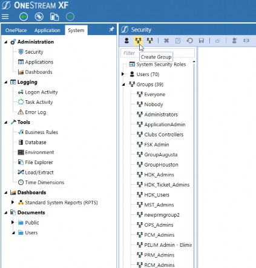
Figure 2.1
Account Reconciliations Administration › Settings › Global Options
Security Role (Reconciliation View Only)
Members of this OneStream User Group can see all Reconciliations within the application, regardless of preparation state, but cannot make any changes to Reconciliations, including adding detail items, making comments, adding attachments, etc. Typically, customers use this role for either internal auditors or upper-level management.
Account Reconciliations Administration › Settings › Global Options
Security Role (Auditor)
Members of this OneStream User Group can only see Reconciliations that are fully complete, meaning they have either been prepared and all levels of approval have been completed, or they have been fully Approved via AutoRec Rules. This role is used whenever you want your auditors to only see Reconciliations that are complete and thus ready for external review. For example, your company may keep Reconciliations In Process while balances are still changing. In such instances, the use of this role would be recommended.
Account Reconciliations Administration › Settings › Global Options
All Reconciliations Require R-Doc
Reconciliation support that relates to the entire Reconciliation balance is referred to as R-Doc, where the R stands for Reconciliation. For example, a bank statement that ties to the subledger would be an R-Doc since it supports the balance in its entirety, and is a statement that is known to be readily available in concurrence with the Reconciliation process.
In instances where it is known that such support is available for all your Reconciliations, set this setting to True. However, note that there are other types of support that can also be provided for Reconciliations, such as I-Docs, which relate to each individual detail line item of support. As such, the use of this setting may not be advisable for many companies as – when enabled – all Reconciliations that are not completed via AutoRec will require an R-Doc to be attached. The implications of requiring supporting documentation to be added to each Reconciliation could be quite time-consuming, especially when you consider your low risk and low balance Accounts. Accordingly, really think about whether this setting is truly necessary before enabling this feature.
Account Reconciliations Administration › Settings › Global Options
Enable Mass Actions
Within the Reconciliation Grid is the ability to select and perform an action on multiple Reconciliations by checking the box to the far left. This functionality is included for situations where customers have large volumes of Reconciliations and do not want to go through every single Reconciliation and then click a separate icon to perform an action on that Reconciliation.
Let’s walk through an example of when mass actions would be useful.
Anna is an accountant responsible for all accrual accounts at her company. In order to get ahead of her close work, she begins providing supporting detail for her 50 subledger Accounts as soon as initial balances are available. By day two, Anna has all balances supported, and her unexplained amounts are within the thresholds. However, due to the complex nature of the accrual Accounts, last-minute entries and adjustments are frequent and balances may change, therefore requiring Anna to continue her work. At a certain point, balances are final, and Anna knows her Reconciliations are complete. Anna doesn’t want to go into each Reconciliation and select the Prepare icon; rather, she would like to select all of her Reconciliations and press Prepare once. In this instance, enabling mass actions would be utilized.
The actions that may be taken are divided into two User types: Preparer and Approver. By default, enable mass actions for Preparer and Approver are set to False. By setting either Preparer or Approver to True, the User type set to True may set multiple Reconciliations to the same state type at once. For Preparers, the actions available are prepare or recall; for Approvers, the actions available are approve, unapprove, or reject.
Account Reconciliations Administration › Settings › Global Options
Transaction Matching Integration
The Transaction Matching solution may be used to create detail item support for your Reconciliations. The process to set up mapping, detail item creation, etc., is discussed later in this book, but as an overview, support from Transaction Matching may either be pushed from a Match Set to the corresponding Reconciliations, or pulled into a Reconciliation from a Match Set. To bring about this integration, select Enable, and the page will then display Enabled (Upon Save). Once you have selected Save at the bottom, the integration will be enabled.
| Note: It is important to observe that once enabled, integration may not be reversed, so be sure you want to utilize this functionality before setting up this feature. |
Account Reconciliations Administration › Settings › Global Options
Process Reconciliations on Complete Workflow
Running Process updates the Reconciliation balances from the Actual Workflow for the given period. Setting this to True will initiate a process for Reconciliations within the Workflow before marking a Workflow as complete.
Upon running Process – which in this instance would be upon completing the Workflow – the system will check to see if any balances have been changed and, if they have, the status of the Reconciliations will change from Approved to Balance Changed, thus indicating that additional work needs to be performed and preventing the Workflow from being completed. This setting helps ensure that, at the time of Workflow completion, all balances that have been reconciled are accurate and tie to the reported financial statements.
Account Reconciliations Administration › Settings › Global Options
Source Scenario
Account Reconciliation queries this Scenario’s Stage or Import balances to populate period balances. Most often, customers will use their Actual Scenario as the source, as these are also the balances used to create the consolidated financial statements. While consolidated financials will look at the Target Accounts, or the Chart of Accounts maintained in the OneStream Account Dimension, Account Reconciliations pull in the Source Account balances. The Source Accounts are the trial balance or GL Chart of Accounts maintained in the ERP, which are then transformed into the OneStream Accounts upon validation of Actuals. The method by which OneStream derives the Inventory of Reconciliations is discussed further within the Definition section.
Account Reconciliations Administration › Settings › Global Options
Reconciliation Scenario
When setting up this Scenario, ensure it is separate from your Source Scenario which, as recommended above, would be Actual. Within this book, we will be using an example Reconciliation Scenario called Actual AR. It is recommended that the Reconciliation Scenario mirror the Source Scenario but be assigned a different Type, such as Model, so that a different Workflow can be assigned to Account Reconciliations. In this way, locking the Actuals Workflow will not affect locking Account Reconciliations, and vice versa.
Figure 2.2 is an example setup of a Reconciliation Scenario.
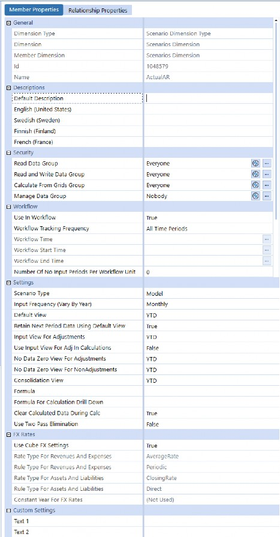
Figure 2.2
Account Reconciliations Administration › Settings › Global Options
Reconciliation Account Dimension
This is a drop-down filter that contains all Account Dimensions within the Application. To configure, select the Account Dimension that contains the Accounts to be reconciled. Throughout this book, we will be reconciling the CorpAccounts Dimension.
Account Reconciliations Administration › Settings › Global Options
Reconciliation Account Member Filter
Enter an Account-based Member Filter used to query a list of accounts to reconcile. For example:
A#[Balance Sheet].Base, A#1000, A#2000.Base
If Extensible dimensionality is being used on the Accounts Dimension in this application, this Member Filter must be adjusted to query Accounts differently across each Cube. This is because an Account could be a Base Member in one Account Dimension and a Parent in another. Here is an example of this syntax:
A#[Balance Sheet].Base.Options(Cube=[GolfStream], ScenarioType=Actual),A#[Balance Sheet].Base.Options(Cube=[Houston], ScenarioType=Actual)
Account Reconciliations Administration › Settings › Global Options
Auto Creation Reconciliation Definition
If set to True, when an Administrator clicks Discover on the Definition page within the Reconciliation Administration, a Reconciliation Definition is added for any Account in the Account List that does not yet have one. Upon creation, the definition will be set to the default setup, discussed later, but can be updated at any time.
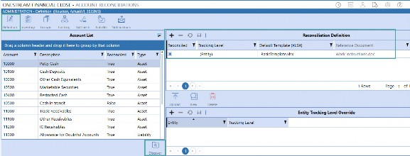
Figure 2.3
Account Reconciliations Administration › Settings › Global Options
Email Connection
This is the named emailed connection used for notification emails. The name of the connections in this drop list derives from the initial server configuration.
To set up an email connection, find the OneStream Server Configuration Utility and run it as an Administrator.
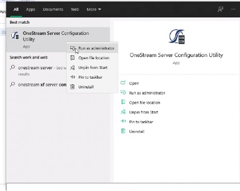
Figure 2.4
Next, select File, and then Open Application Server Configuration File.
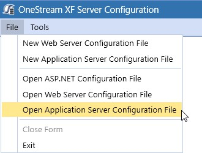
Figure 2.5 Then, open your application configuration file.
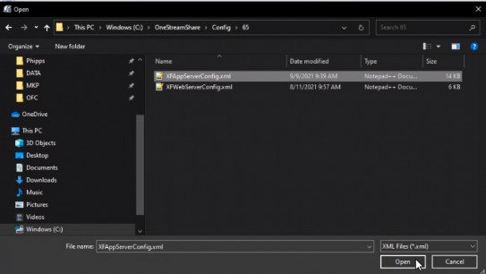
Figure 2.6
Under Databases, click on the ellipsis to edit the Database Server connections.
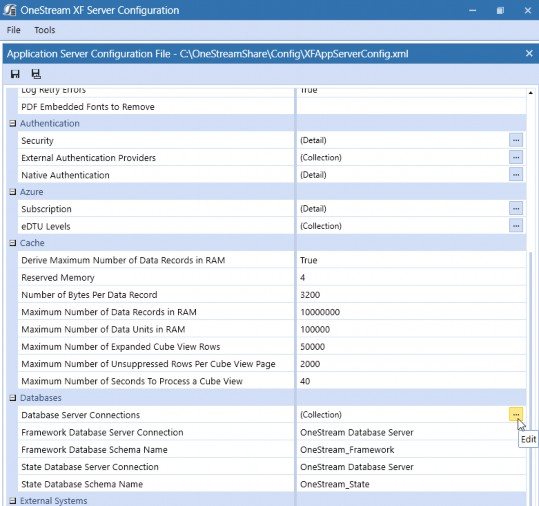
Figure 2.7 Add and name your Database Server connection.
| Note: The Database Provider Type must be email to appear in the settings drop-down, and a connection string must be provided. The name of the connection created will appear in the drop-down; in the Figure 2.8 example, it is OneStreamEmail. |
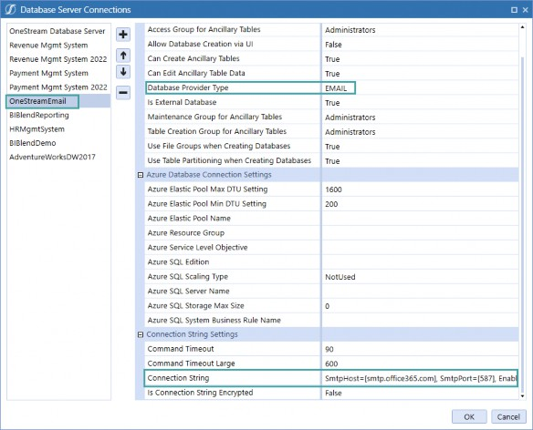
Figure 2.8
Account Reconciliations Administration › Settings › Global Options
Reconciliation Definition Email Notification Types
By default, these email notifications are set to False, but when set to True the following emails are sent to all Reconciliation Administrators (those set to manage Reconciliation setup):
New OneStream Accounts: A new Account is added to the Account List with the Definition page after running Discovery.
New Reconciliations Discovered: A new Reconciliation is added to the Reconciliation Inventory after running Discovery.
Balance Changed: A Reconciliation balance was changed after it was marked Complete or set to In Process.
Account Reconciliations Administration › Settings › Global Options
Multi-Currency Reconciliations
The impact of multi-currency is discussed throughout this book. Enabling multi-currency allows you to have a currency type set at the Source Account level (GL Account). The Account currency type for each Reconciliation item is an attribute maintained within the Reconciliation Inventory.
This differs from the Local currency (maintained on the Entity Dimension) and Reporting currency (maintained at the Cube level). Therefore, each Reconciliation may have a different Account currency.
Reconciliations with a common Target Entity will have the same Local currency, as this currency is held on the Entity, and all Reconciliations within an application will have a single Reporting currency, as Account Reconciliations reference a single Cube.
In addition, for Reconciliations where multi-currency is enabled, Account, Local, and Reporting Currencies all display in the Account Reconciliations Grid, as shown below. Note that the Reconciliation within the grid, in Figure 2.9 for Target Entity Frankfurt, is a multi-currency Reconciliation and thus has an Account currency balance; the second, Houston Heights, is single and therefore does not have an Account currency balance.
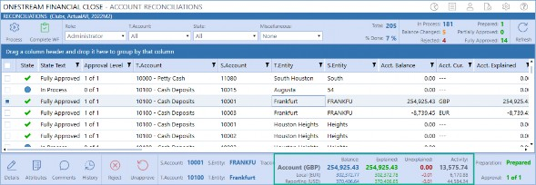
Figure 2.9
To enable multi-currency, select Enable on the Global Options page, and the page will then display
Enabled (Upon Save). Once you have selected Save, at the bottom, the integration will be enabled.
| Note: Once enabled, this integration may not be reversed, so be sure you want to utilize this functionality before setting up this feature. |
Account Reconciliations Administration › Settings › Global Options
FX Rate Type
Account Reconciliations Administration › Settings › Global Options › FX Rate Type
Single-Currency Solutions
The FX rate type that is being used to calculate the Reconciliation balances on specific Reports. Examples include ClosingRate or AverageRate. If this is not populated, no translated values are available in Reports. This must be set even if multi-currency is enabled because some Reconciliations within the Reconciliation Inventory may remain single-currency.
Account Reconciliations Administration › Settings › Global Options › FX Rate Type
Multi-Currency Solutions
The FX rate type that is being used to translate Reconciliation balances from Local currency to Account currency and from Local currency to Reporting currency. Translation from one currency level to another only occurs if the Account and/or Reporting balances are not loaded into Stage. Local currency is the Base-level currency and is the level that is reconciled for single-currency applications. Therefore, Local balances are required for multi-currency Reconciliations. This is also the rate type that is used to translate detail items from the detail currency type to the Account.
Account Reconciliations Administration › Settings › Global Options
FX Reporting Currency
Account Reconciliations Administration › Settings › Global Options › FX Reporting Currency
Single-Currency Solutions
The currency type used as the target currency for Reports that translate values. If this is not populated, no translated values will be available on these Reports. For solutions where multi-currency is enabled, but not all Reconciliations are multi-currency (such as the Houston Heights and Frankfurt example above), this is the rate type that would be used to translate the Local currency to the Reporting currency for reporting purposes. As Houston Heights is a single-currency Reconciliation, the following options appear once the Report icon is selected at the bottom of the page.
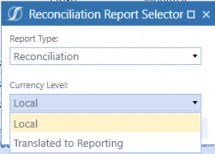
Figure 2.10
After selecting Translated to Reporting, the following Report will run using the direct Translation.
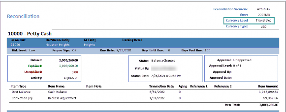
Figure 2.11
A note on Translation for single-currency Reconciliations. Account Reconciliations provides a translated value in certain Reports for the convenience and analysis of the Administrator or End-User. This translated value is not stored but is calculated based on settings in Global Options as the Report is being processed. This is a simple Translation being run that assumes a Calculation similar to the direct Translation Method of multiplying what is expected to be a Year-to-Date value by the FX rate type specified in Global Options; however, these are not the same Translation algorithms being processed, and no custom Translation Methods (i.e., Business Rules) are supported. These Reports note that they are translated by listing this FX Reporting currency in the right-side of the Report’s header section.
Since Frankfurt is multi-currency, the Reporting currency has already been calculated within the Reconciliation and it, therefore, has the following available Reports.
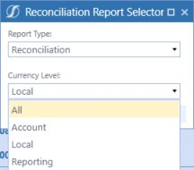
Figure 2.12
Frankfurt’s Reporting Currency Report shows a Currency Level of Reporting instead of Translated.
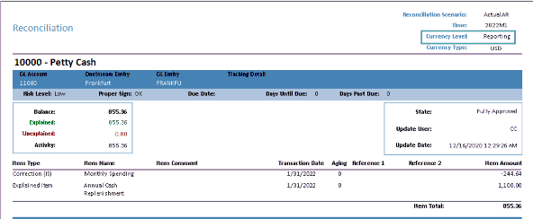
Figure 2.13
Account Reconciliations Administration › Settings › Global Options
Audit Files Use Target Name Only
This controls the naming convention for audit package files. When set to True, audit files that are created will only use the Target Account and Entity in the file name. When set to False, the audit files are created with the Source and Target Account and Entity in the file name. The default is set to Not Selected, (False). The check box should be selected if there is the possibility of the file name length exceeding the Windows limit of 260 characters. If the file name exceeds 260 characters, the audit package file will not be generated. Windows 10 does enable Users to change the 260-character limit by changing the Windows Group Policy.
Account Reconciliations Administration › Settings
Global Defaults
Global defaults are used upon the initial creation of a Reconciliation when the Discover process is run.
Account Reconciliations Administration › Settings › Global Defaults
Default Reconciliation Definition
If the Auto Create Reconciliation Definition Global Option is set to True, these are the default properties that will be assigned to all new Reconciliations created during the Discover process within the Definition page. There are three default properties that can be configured:
Reconciled – The default is set to True, which indicates that the Reconciliation must be completed.
Tracking Level – This is a drop-down list that is derived from the Tracking page within Administration. The level selected will determine the granularity of the Reconciliation. By default, OneStream provides a tracking level of Entity, which means Reconciliations will be discovered for instances where Source and Target Entities are different and when Source and Target Accounts are different. For example, in the screenshot below, there are six Target Accounts that came into the Import step:
10001,10002,10003,10004,11234, and11238(item 1) from two different Source Entities:HeightsandSouth(item 2). The total balance for these Accounts is $87,906,473.35, which would appear as a single line of cash on the consolidated financials for the Parent companyHouston.
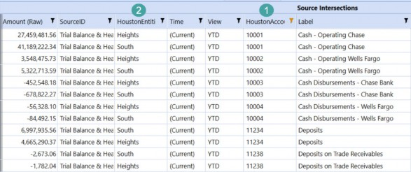
Figure 2.14
You can see, after transformation, how the Source Accounts have all transformed to the Account 10100, which is maintained in the Account Dimension. The Entities have also been transformed to the Target Entities – Houston Heights and South Houston – but the total of the amounts is still the same, $87,906,473.35.
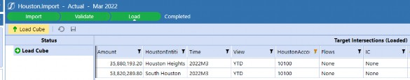
Figure 2.15
While the Actual balances have aggregated into a single balance sheet Account, there have been 12 different Reconciliations created within Account Reconciliations, since there are two different Entities and six different Source Accounts.
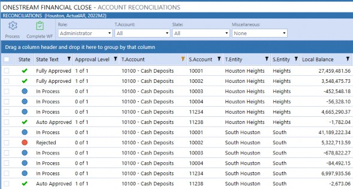
Figure 2.16
The tracking level can get even more granular to include IC, Flow, and UDs, if those items vary on your import and you wish to reconcile at that level. An example of this would be to reconcile at the cost center level by utilizing a UD.
Default Template – this is a drop-down list of templates that are maintained on the
Templates page of Settings.
Account Reconciliations Administration › Settings › Global Defaults
Default Reconciliation Attributes
The default primary Preparers and Approvers discovered are set here. Information on security roles and actions are discussed within Security.
Account Reconciliations Administration › Settings › Global Defaults
Default Reconciliation Time-Based Attributes
The default attributes for all new Reconciliation Inventory items discovered are set here. Information on each attribute – including definitions, how they are populated, etc. – are discussed within the Reconciliation Inventory section.
Account Reconciliations Administration › Settings
Control Lists
Control Lists are used to populate certain parameter-driven, selectable drop-downs, and various Reports throughout the solution. OneStream provides default items within each list to get you started with your configuration process, but these lists can be updated as necessary by your company.
Account Reconciliations Administration › Settings › Control Lists
Item Types
When a Preparer creates a detail item to support the Reconciliation balance, they can select an Item Type from a drop-down list. This control list is what is used to populate the drop-down.
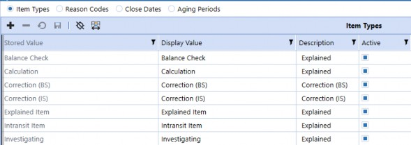
Figure 2.17
Account Reconciliations Administration › Settings › Control Lists › Item Types
Stored Value
This is the text that is written to the Account Reconciliation tables when an item is added. The End-User will not see this value.
Account Reconciliations Administration › Settings › Control Lists › Item Types
Display Value
Item Type text that is displayed to Preparers once they create a detail item.
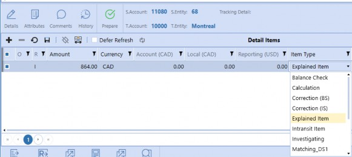
Figure 2.18
Account Reconciliations Administration › Settings › Control Lists › Item Types
Description
The type of item added to a Reconciliation. This drop-down list is prepopulated to include:
Correction (BS) and Correction (IS) – These items indicate an issue with the current balance in the GL and require a correction. Additional reporting is available, based on this item class.
Explained – Used when a balance is being properly explained and supported (e.g., no correction is required).
Statement – This should be used in instances where an external statement is used to support the detail item, such as a bank statement.
These descriptions are not used within the out-of-the-box Account Reconciliation solution but can be utilized for custom dashboarding (if desired by your company) to help classify and quantify the items that have been created for a period.
Account Reconciliations Administration › Settings › Control Lists › Item Types
Active
By default, this is set to True. Note that an Item Type cannot be deleted. As such, if you do not want one of the Item Types (that was previously included in the control list) to display to End-Users, set the status to False.
Account Reconciliations Administration › Settings › Control Lists
Reason Codes
When an Approver clicks Reject or Unapprove, they are prompted to select a Reason Code from the drop-down list and provide optional Reason Text. The drop-down list is edited within this Control List.
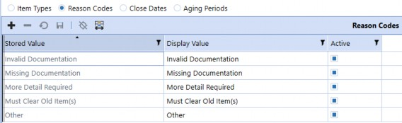
Figure 2.19
Account Reconciliations Administration › Settings › Control Lists › Reason Codes
Stored Value
This is the text that is written to the Account Reconciliation tables when an item is added. The End User will not see this value.
Account Reconciliations Administration › Settings › Control Lists › Reason Codes
Display Value
Reason Code text that displays to Approvers once they reject or unapprove a Reconciliation.
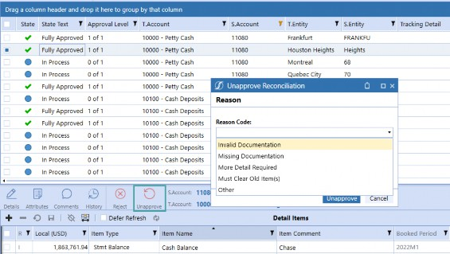
Figure 2.20
Account Reconciliations Administration › Settings › Control Lists › Reason Codes
Active
By default, this is set to True. If set to False, the Approver will not see the Reason Code. However, Reason Codes can be deleted, so it may be best to delete the Reason Code if it is not being used – for maintenance purposes.
Account Reconciliations Administration › Settings › Control Lists
Close Dates
Close Dates set a specific date and time for a Workflow time period. For example, if you are preparing M1 Reconciliations and are on a standard monthly calendar, you are performing your January Reconciliations. However, your close process may start before January 31, or it may start on the last day of the month, but the date falls on a weekend. Use this setting to customize the actual start date of close for each period. This date will then be used to calculate if Reconciliations are past due, regardless of a User’s location.
| Note: Close dates must be set for every Workflow time period; if they are not, the date shown on the Reconciliations page is 1900/01/01. |
Account Reconciliations Administration › Settings › Control Lists › Close Dates
WF Time
The Workflow time period. Click the + button to add one record for each Workflow time period related to the Source Scenario, or Actual for our examples.
The list of Workflow time periods is for the currently-selected Workflow year, plus the following year. This includes all frequencies of time (half-years, quarters, months, and weeks, if applicable) for this application. Choose a time period relevant to the input frequency of both the Source Scenario and Reconciliation Scenario involved in Account Reconciliations. The input frequency properties of each Scenario (for example, monthly) must match. It is also important to note that if your company plans to utilize Transaction Matching to support Account Reconciliations, which will be discussed later, the input frequency for matching must also match Source and Reconciliation. Most customers will, therefore, typically perform Reconciliations on a monthly basis.
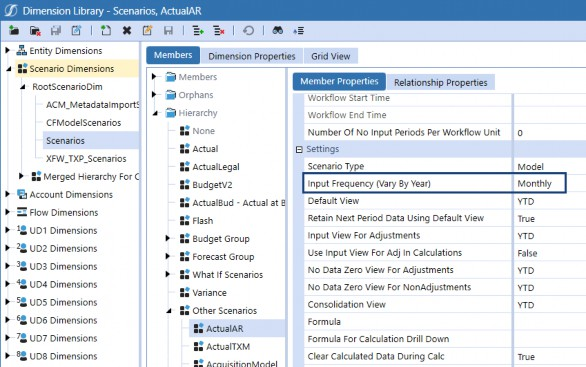
Figure 2.21
Account Reconciliations Administration › Settings › Control Lists › Close Dates
Close Date Local (Day 0)
Using the date picker, or by typing in the date, select the date when the financial close starts for the Workflow time period. This will be your day 0 for close, so – in Figure 2.22, below – day 1 of the March close would be April 1; day 2 would be April 2; and so on.
These days of close are what are used to determine when a Reconciliation is due, based on the
Approver Workday Due attribute set in the Reconciliation Inventory.
| Note: Account Reconciliations does not take weekends or holidays into account, so the workday due would need to be changed in the example of day 2 (April 2), falling on a weekend. In this instance, Reconciliations due on day 2 of close (which is April 4, based on the calendar) would be set as due on workday 4, for Account Reconciliation purposes. |
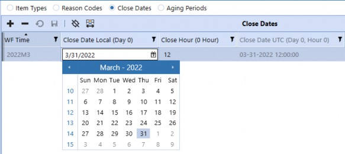
Figure 2.22
Account Reconciliations Administration › Settings › Control Lists › Close Dates
Close Hour (0 Hour)
Set to the hour of day the close will start for local time. For example, if close starts at 5:00PM, set this to 17. Local time is determined by the time zone where your OneStream Server is located. Due date Calculations do not take close hour into account.
Account Reconciliations Administration › Settings › Control Lists › Close Dates
Close Date UTC (Day 0, Hour 0)
The column is calculated upon Save. The close date local (Day 0) is converted to the UTC (Coordinated Universal Time, aka GMT/Greenwich Mean Time) equivalent for the purposes of comparing the current local time for when a Reconciliation Inventory item is due.
The close date setting is used to calculate when Reconciliations are due. Let’s walk through an example of when a Reconciliation would be marked as upcoming and past due.
Assume a Reconciliation is assigned an Approver workday due of 0 on the Reconciliation Inventory. The Approver due date that will appear in the Reconciliation Grid will be 3/31/22. Using the close date from Figure 2.22, the Reconciliation would show due in 0 days, on March 31, and on April 1 the Reconciliation would move to due in 0, and past due 1.
Account Reconciliations Administration › Settings › Control Lists
Aging Periods
Upon saving a detail item, the aging is calculated by taking the last day of the Workflow period less the transaction date. These periods are used to group detail item aging into aging buckets, which can be later utilized to determine actionable items, including potential write-offs. The default period start dates are:
0: 0 to 30 days
31: 31 to 60 days
61: 61 to 90 days
91: 91+ days
You can add periods to this, and edit current period starts. For example, if a period start of 121 were added, a new bucket of 91 to 120 would be created, and the last bucket would be 121+.
If you were reconciling March balances, or in M3 (in Figure 2.22), and created a detail item with a transaction date of 3/15/22, the aging that would appear for the detail item would be 16, or 31 less 15. That aging of 16 would fall into the bucket between 0-30 on the aging analysis. If the detail item was carried forward into the next period, the aging would recalculate for the period and would appear as 46 (16 from the prior period plus 30 days in April). When looking at the aging analysis for April, the item would now appear in the 31-60 bucket in the aging analysis, but will still appear in the 0-30 bucket in March.
Account Reconciliations Administration › Settings
Templates
The Control List stores the templates that get assigned to Reconciliations through the Global Defaults (upon initial creation) or within the Reconciliation Definitions (if a different template to the Global Default template is necessary, the template must be updated). Account Reconciliations comes with a few example templates. You can use these templates as a starting point for your organization as you create custom templates and upload them to this Control List. If you do modify existing templates, make sure you change the name of the template upon upload. Otherwise, the template that you customized with the same naming convention utilized by OneStream will be replaced following any upgrades.
Within the Templates page, there are a few actions at the bottom.
Upload: Select this icon to add a new Excel template to the solution.
View: Select this icon to open a read-only copy of the selected template.
Delete: Select this icon to delete the selected template. Note that the template may only be deleted if it is not currently assigned to a Reconciliation.
Replace: To change the template assigned to any existing Reconciliation Definition, select the original template from the drop-down list and then select New Template from the drop-down and click the Replace icon. This replacement will occur on all Reconciliations where the original template was assigned in the Reconciliation Definition.
When viewing the basic template that comes with Account Reconciliations, there are substitution variables replaced with values from the Reconciliation being processed. Figure 2.23 shows the design view.
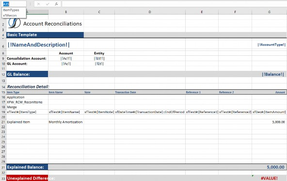
Figure 2.23
If the basic template was assigned to a Reconciliation Definition and the template was then opened within a Reconciliation Workspace, the substitution variables would be replaced with the Reconciliation information at runtime, as shown in Figure 2.24.
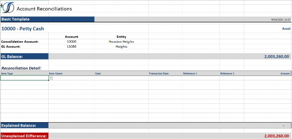
Figure 2.24
| Note: Item Type is a drop-down list. This is a data validation list that is populated from the Item Types tab. Make sure you update the list to include all Item Types you have set up in your Item Types control list. |
Figure 2.25 shows how this appears as a multi-currency S-Doc template, with
MultiPeriodTemplate.xlsx being the example template provided. Note that the named range of xftRecon is selected, and rows 16-20 are unhidden but are normally hidden. This named range would need to be extended if additional rows are needed for import. The top-left cell of such a named range must be the cell with the word Application in it, and the bottom-right cell of the range should be the last column of the last row to be imported. It is acceptable to include additional empty rows in this range. OneStream can read in multiple xft-named ranges on one or more sheets of the same Excel workbook. Save this file in Excel xlsx format.
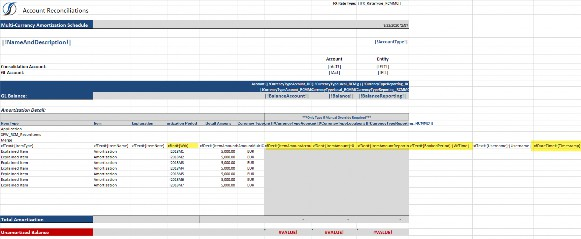
Figure 2.25
A few hidden column tokens of note:
Wtk: Workflow Time Key – These OneStream time periods contain an exclamation point as the first character (for example,
!2018M1). This helps OneStream look up the time key for this period and store that value in the database upon import. Include as many rows as periods of data are necessary, even if spanning years.Item Amounts (multi-currency solutions): These columns are automatically translated within the template. The template is pulling FX rates for the period in order to translate the detail amount balances. The translated amounts are for display purposes only, because Translation of the detail amounts takes place upon import into OneStream. Further, only current period balances will be translated on the template.
BookedPeriod: The
|WFTime|substitution variable is used, which means that every row being imported will be booked to the same WF period that was processed at the time.TimeStamp: The date and time this template was imported, which will be the same for each time period.
AgingDays: The calculated days aged for the detail item upon template upload.
Templates that support multiple currencies are included for solutions that have multi-currency enabled. In the multi-currency basic template and multi-currency multi-period template, columns are included to allow for detail amount, detail currency type, Account balance, and Reporting balance.
For single-currency Reconciliations, only Local balances are loaded, and as such, if a Reconciliation is set to single-currency, the templates that do not include multi-currency functionality must be used. The currency type for each currency level appears within the template and FX rates are automatically pulled in order to show the conversion that will occur on import.
| Note: OneStream still utilizes Translation functionality within the system to translate detail amounts. |
The translated balances of Account, Local, and Reporting for the detail items are for informational purposes only. However, if an override is necessary for any of the levels, OneStream accepts the overridden amount upon upload of the template (if overrides are permitted on the Reconciliation). To identify balances that were overridden within the template, amounts overridden display bold, and the override alert appears on the face of the Reconciliation.
For multi-period templates, informational translated balances only display for the current month because future rates are not available at the time of template creation.
Account Reconciliations Administration › Settings
Access Control
Access Control is part of the security setup within Account Reconciliations. This is discussed in detail in the Security section of this chapter.
Account Reconciliations Administration › Settings
Certifications
Certifications are utilized within Account Reconciliations, similar to how they are utilized within the Workflow process. However, instead of seeing the statements at the time of Workflow completion, Preparers have the ability to view the certifications at the time of each Reconciliation preparation, and Approvers can view the certifications at the time of each Reconciliation approval. Like Workflow certifications, these are customizable text and can be modified to meet your company’s requirements.
Account Reconciliations Administration › Settings › Certifications
Role
Select the User role that will see the certification upon action (either preparation or approval). Note that Approver certifications are present to all Approvers regardless of Approval level.
Account Reconciliations Administration › Settings › Certifications
Message
Input the text you would like presented to either the Preparer or Approver when preparing or approving Reconciliations, respectively.
Account Reconciliations Administration › Settings › Certifications
Active
By default, this is set to True. If set to False, the certification will not be displayed. Certifications can be deleted, though, so it may be best to delete the certification if it is not being used – for maintenance purposes.
Account Reconciliations Administration › Settings › Certifications
Comment Required
This indicates that a Preparer or Approver must also add a comment – in addition to reviewing the certification – at the time of preparation or approval. If set to False, comments are not required but can be added if the Preparer or Approver chooses. All comments are displayed on the Comments page found within the Reconciliation header.
Account Reconciliations Administration › Settings › Certifications
Time Stamp & User ID
The date and time the certification settings were created or modified, and the ID of the User who made the changes.
Figure 2.26 shows the dialog presented to Users upon Preparation or Approval of Reconciliations, how to view the certifications, and where comments are inputted.
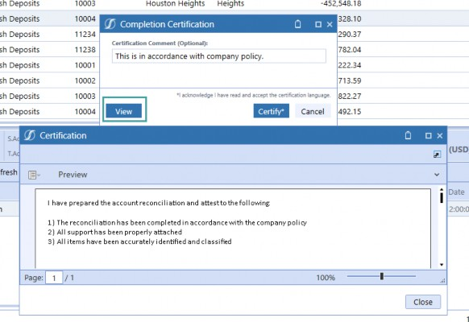
Figure 2.26
Account Reconciliations Administration › Settings
Uninstall
The Uninstall page allows you to uninstall either the User Interface or all solutions within OneStream Financial Close, which would include Account Reconciliations and Transaction Matching. If uninstall is performed as part of an upgrade, any modifications that were made to standard solution contents are removed.
Account Reconciliations Administration › Settings › Uninstall
Uninstall UI – OneStream Financial Close
Removes all solutions within OneStream Financial Close, including all Dashboards and Business Rules but leaves the databases and related tables. Performing this step is encouraged for most upgrades as Dashboards are often modified within the solutions. However, it is important to note that when this is done, the Workspace Dashboard Name for every Workflow Profile must be reassigned.
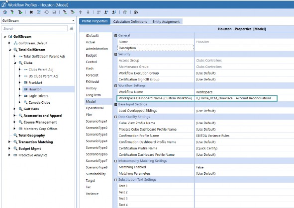
Figure 2.27
Account Reconciliations Administration › Settings › Uninstall
Uninstall Full
Removes all related data tables, all data, all solutions’ Dashboards, and all Business Rules. Select this option to completely remove the solutions.
| Note: This option is irreversible and is therefore not recommended. |
This option should be utilized only if your company has determined they will not be using any of the OneStream Financial Close solutions, or if the release notes for the version being installed state that the upgrade is so significant in its changes to the data tables that this method is required.
Account Reconciliations Administration › Settings
Settings Summary
The initial settings – covered above – help define the entire ‘shell’ of your Account Reconciliations solution. Now that you’ve defined your overall framework, let’s dive into the nitty gritty with Security!
* * *
Account Reconciliations Administration
Security
Security within Account Reconciliations is configured in a few different places. As an overview, Users may take action on Reconciliations at any role equal to, or below, the role they are assigned, as long as they have not already taken action on the Reconciliation – in order to support segregation of duties.
For example, if User Lynn is assigned as the Primary Approver 1, she may either prepare OR approve at Level 1, but she may not do both, and she cannot approve at Levels 2-4.
In turn, assume Brian is the primary assigned Approver 1 within the Reconciliation Inventory, and Amy is the primary assigned Approver 2 within the Reconciliation Inventory. As such, there are two levels of approval required, and assume there is no Access Group assigned.
Brian is out on vacation for the period, so Amy Approves the Reconciliation on his behalf as a Level 1 Approver. To complete the Reconciliation, there are multiple options:
An Administrator can perform the Level 2 Approval. This would be the recommended approach – in this instance – as the primary Approver 1, Brian, is only temporarily unable to perform his duties, and therefore no additional administration would need to be performed on the attributes.
The Reconciliation may be Recalled or Rejected. Once this is done and the Reconciliation is sent back to an In Process state:
The Administrator can change the number of approvals required to one for the current period.
An Administrator may add an Access Group for the current period so that someone can perform the Level 2 Approval as a backup.
An Administrator can change the attributes so that Amy is Approver 1, and assign someone else as Approver 2.
The table in Figure 2.28 outlines the various roles, what platform system security roles may be assigned to the role, where the role is configured, and the actions the role may take (assuming no prior action was taken).
| Role | Assignable System Security Roles | Configuration | Actions |
|---|---|---|---|
| Viewer | Users and Groups | Access Control | • Can only see the data and activity for Reconciliations |
| Commenter | Users and Groups | Access Control | • Preform all Viewer actions • Can add, delete, or edit their own comments when Reconciliation is In Process or Prepared • Can add comments once a Reconciliation is Fully Approved (not delete or edit) |
| Preparer | Users | Reconciliation Inventory | • Perform all Commenter actions • See all assigned Reconciliations, regardless of role, within the Reconciliation Workspace • Filter Reconciliations within the Reconciliation Workspace using the Primary Preparer filter to |
| Role | Assignable System Security Roles | Configuration | Actions |
|---|---|---|---|
see Reconciliations where they are the Primary Preparer • Filter Reconciliations within the Reconciliation Workspace using Preparers or Approvers filter to see Reconciliations where they are the Backup or Primary Preparer • Create detail items • Attach supporting I-Doc, R-Doc, S-Doc, and T-Doc • Run Process, which will pull balances from Stage for all Reconciliations to which they are assigned • Perform preparation duties by clicking the Prepare button • Receive Rejected, Approved, Unapproved, Comment, or Balance Change notifications if they are assigned to the Reconciliation (see notifications section for more detail) • Recall Prepared Reconciliations (Reconciliation without any approval), putting them back to an In Process state | |||
| Backup Preparer | Users and Groups | Access Control | • All actions a Primary Preparer may perform except filter Reconciliations within the Reconciliation Workspace using the Primary Preparer filter to see Reconciliations where they are the Primary Preparer • Receive Rejected, Approved, Unapproved, Comment, or Balance Change notifications if notify is set to True on the Access Control setup (see notifications section for more detail) |
| Approver 1 | Users | Reconciliation Inventory | • Preform all Primary Preparer actions • Filter Reconciliations within the Reconciliation |
| Role | Assignable System Security Roles | Configuration | Actions |
|---|---|---|---|
Workspace using the Primary Approver filter to see Reconciliations where they are the Primary Approver • Filter Reconciliations within the Reconciliation Workspace using Preparers or Approvers filter to see Reconciliations where they are the Backup or Primary Approver • Recall Reconciliations (Reconciliation without any approval), putting them back to an In Process state • Reject Prepared Reconciliations (Reconciliation without any approval), putting them back to an In Process state. Rejecting Reconciliations requires providing a Reason Code. • Reject Auto Prepared Reconciliations • Receive Completed or Comment notifications if set to True on the Global Options • Unapprove Reconciliations that are at a Level 1 approval (cannot unapprove above their level), sending the Reconciliation back to a Prepared state. | |||
| Backup Approver 1 | Users and Groups | Access Control | • All actions a Primary Approver 1 may perform except filter Reconciliations within the Reconciliation Workspace using the Primary Approver filter to see Reconciliations where they are the Primary Approver • Receive Completed or Comment notifications if notify is set to True on the Access Control setup |
| Approver 2 | Users | Reconciliation Inventory | • Perform all actions as Primary Approver 1, including prepare and perform Level 1 approval |
| Role | Assignable System Security Roles | Configuration | Actions |
|---|---|---|---|
• Perform Level 2 approval if they have not prepared or performed Level 1 approval • Unapprove Level 2 approval, sending the Reconciliation back to status of Partially Approved (if previously Fully Approved because only two Approvals were required), and approval of Approved Level 1 of X (either 2, 3, or 4) | |||
| Backup Approver 2 | Users and Groups | Access Control | • All actions a Primary Approver 2 may perform except filter Reconciliations within the Reconciliation Workspace using the Primary Approver filter to see Reconciliations where they are the Primary Approver • Receive Completed or Comment notifications if notify is set to True on the Access Control setup |
| Approver 3 | Users | Reconciliation Inventory | • Perform all actions as Primary Approver 2, including prepare and perform Level 1 & 2 Approvals • Perform Level 3 approval if they have not prepared or performed Level 1 or Level 2 approval • Unapprove Level 3 approval, sending the Reconciliation back to Status of Partially Approved (if previously Fully Approved because only three approvals were required), and approval of Approved Level 2 of X (either 3 or 4) |
| Backup Approver 3 | Users and Groups | Access Control | • All actions a Primary Approver 3 may perform except filter Reconciliations within the Reconciliation Workspace using the Primary Approver filter to see Reconciliations where they are the Primary Approver |
| Role | Assignable System Security Roles | Configuration | Actions |
|---|---|---|---|
| • Receive Completed or Comment notifications if set to True on the Global Options and if notify is set to True on the Access Control setup | |||
| Approver 4 | Users | Reconciliation Inventory | • Perform all action as Primary Approver 3, including prepare and perform Level 1-3 Approvals • Perform Level 4 approval if they have not prepared or performed Level 1-3 approval • Unapprove Level 4 approval, sending the Reconciliation back to Status of Partially Approved and approval of Approved Level 3 of 4 |
| Backup Approver 4 | Users and Groups | Access Control | • All actions a Primary Approver 4 may perform except filter Reconciliations within the Reconciliation Workspace using the Primary Approver filter to see Reconciliations where they are the Primary Approver • Receive Completed or Comment notifications if notify is set to True on the Access Control setup |
| Local Admin | Users and Groups | Access Control | • Navigate to the Reconciliation Administration page • View Reconciliation Inventory items where the Access Group attribute is set to an Access Group where they are Local Admin • Edit Reconciliation attributes for Inventory items where they are the Local Admin • Edit Access Groups, including assignment and members, to assigned Reconciliations, within the Reconciliation Inventory page |
| Role | Assignable System Security Roles | Configuration | Actions |
|---|---|---|---|
• View and edit Reconciliation Inventory attributes to Account Groups they manage • Process Reconciliations for Base-level Workflow Profiles | |||
| Account Reconciliation Admin | Users | Global Options | • Navigate to the Reconciliations Settings page and modify and configure all Reconciliation Settings • View all pages within the Administration (Definition, Inventory, Tracking, Bal Check, AutoRec) and modify and configure all settings • Run Discover • View all Reconciliation Inventory items and can edit all attributes • Can view all Reconciliations in the Reconciliation Grid • Unapprove or reject Fully Approved Reconciliations • Create, modify, and delete members of the Access Groups • Assign Local Admins to Access Groups • Process Reconciliations for Parent-level Workflow Profiles • Unapprove Auto Approved Reconciliations • Complete a Reconciliation WF once all underlying Reconciliations are Fully Approved |
| OneStream System Admin | Users | System Security | • Perform all actions as Reconciliation Admin • Assign Account Reconciliation Admin |
Figure 2.28
Figure 2.29 shows the Workflow a Reconciliation may go through and the various states it may take. The diagram shows only three levels of approval, but (again) a Reconciliation may have up to four levels. For reference, AG refers to Access Group members or back-up roles.
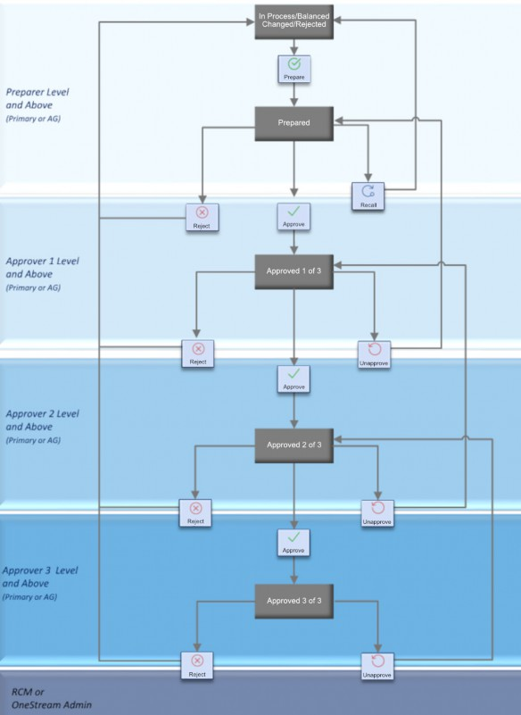
Figure 2.29
Figure 2.30 shows the actions each role type may take for a Reconciliation that is In Process.
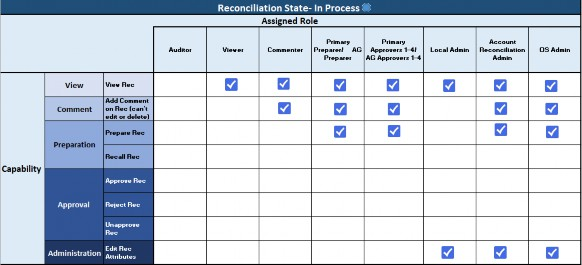
Figure 2.30
Figure 2.31 shows the actions each role type may take for a Reconciliation that is Prepared.
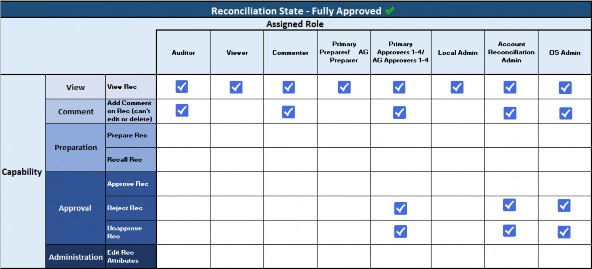
Figure 2.31
Account Reconciliations Administration Figure 2.32 shows the actions each role type may take for a Reconciliation that is Fully Approved.
Figure 2.32
Account Reconciliations Administration › Security
Primary Preparer and Approvers
Primary Preparers and Approvers are assigned at the Reconciliation level on the Reconciliation Inventory, on the Administration page, using a drop-down that includes all Security Users within the Platform.
The assignment of primary roles was done to prevent the creation of Access Groups for each Reconciliation. The intention behind this design is that primaries would be assigned, and then minimal Access Groups would be created to be utilized as backup roles. Utilizing the assignment of primary roles will assist in your solution’s performance since the system will not have to loop through each Access Group to determine if you have the proper credentials. Instead, it will look directly to the Reconciliation Table.
Account Reconciliations Administration › Security
Access Groups
Again, Access Groups are intended to be used for backup roles. To create an Access Group:
Navigate to the Access Control page within Settings.
Select + to create a new group.
Name the Access Group. This name is what will appear in the drop-down of available Access Groups in the Reconciliation Inventory. Note this name cannot be changed upon Save.
Add a description for the Access Group. This description will not appear in the solution but is for your reference. Save the Access Group.
Once the Access Group is created, you can assign either Security Users or Security Groups. To add a new User, select +.
Select a User from the drop-down.
Assign a role to that User. This will be a backup role in instances where the Primary is not available to perform their duties. If you would like this User to receive email notifications, set the Notify box to True.
To assign Security Groups to perform backup duties, navigate to the bottom-right and select +.
Select a Security Group from the drop-down. In the example, in Figure 2.33, RCM_Commenters was selected, meaning any time a User was added or removed from the RCM_Commenters Platform Security Group, the change would also be reflected in their access to Account Reconciliations. This has been added to reduce the maintenance of Security Groups in instances where a customer decides to utilize Groups that were already created in the platform.
Assign a role to the Security Group.
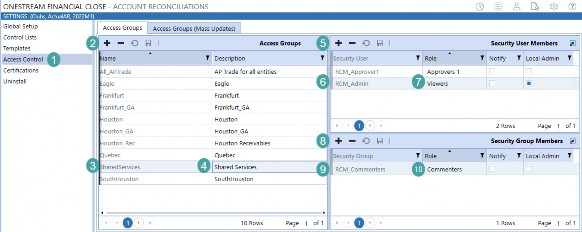
Figure 2.33
Account Reconciliations Administration › Security
Access Groups (Mass Updates)
The Security User Members and Security Groups Members grids show all Access Groups that were created on the Access Group page – and their members – to easily edit multiple Access Groups at once without having to manually click through each Access Group. For example, in Figure 2.34, all Users are shown for the two Access Groups that I have set up within my system, HoustonAG and SharedServices, and I can add Users or Groups to either of these Access Groups. I can also edit the roles for either Access Group.
| Note: When changes are made, the lines do not turn yellow, as is typical on other areas of the platform where edits are made to indicate a save is needed. Rather, the Save button is black instead of light gray. Make sure you save all changes before navigating away from this page. |
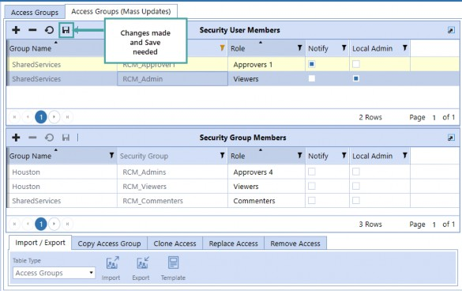
Figure 2.34
Account Reconciliations Administration › Security › Access Groups (Mass Updates)
Import/Export
This option allows the ability to first export the Access Group information into an Excel template. From there, the preset Excel range can be edited to make changes to Access Group settings.
Information is provided at the top of the exported Excel template on how to edit the Access Group information. Once you have completed editing, you may then import changes directly into the solution. This is useful when first setting up Access Groups or making mass updates to existing Access Groups.
Account Reconciliations Administration › Security › Access Groups (Mass Updates)
Copy Group Access
Utilize this feature when you would like to use an Access Group already created as a starting point for future groups. For example, you may know Jenna will always be a backup Preparer, Chelsea will always be a backup Approver 1, and Amanda will be backup Approver 2. In this instance, you could create an Access Group with those members and role assignments, and utilize it as your framework for creating additional Access Groups.
Select an Access Group from the drop-down and enter the name of the new (Target) Access Group to be created and then click Copy. The new Access Group will then appear on the Access Group screen along with the Users and User roles; you can now easily add one-off members to each Access Group as necessary.
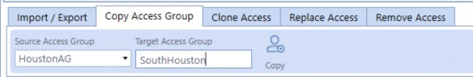
Figure 2.35
Account Reconciliations Administration › Security › Access Groups (Mass Updates)
Clone Access
Utilize this feature when you would like to mirror the access of Users or Groups already set up within the Access Groups. For example, if a new employee – Katie – started to assist Jenna in her Preparer back-up duties, you would select User Jenna from the drop-down as the Source and then select Katie as the Target. Upon selecting Clone, Katie would appear in all Access Groups that Jenna was previously assigned to (along with Jenna), and both would have the role of Preparer. The same applies for a Security Group.
Select a Source User or Source Group as the model User/Group and a Target User or Target Group, and then click Clone. The Target User/Group is added into every Access Group that the Source User/Group is in. If the Target User/Group was previously in an Access Group that the Source User/Group is not in, the Target User/Group is removed from that Access Group. The Target User and Source User will have the same access.
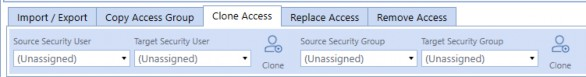
Figure 2.36
Account Reconciliations Administration › Security › Access Groups (Mass Updates)
Replace Access
Utilize this feature when you want to remove previously established access and replace it with a different User or Group. For example, using the same example as above, let’s assume Jenna has moved departments and Katie is completely taking over her role. In this instance, I would want to remove all of Jenna’s access and replace her with Katie.
Select a Source User or Source Group who will be replaced in every Access Group with the Target User or Target Group upon clicking Replace. Note that filtering between the Clone and Replace tabs will not refresh your drop-down selections, so make sure your selections are correct before selecting Replace.
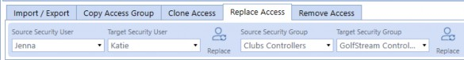
Figure 2.37
Account Reconciliations Administration › Security › Access Groups (Mass Updates)
Remove Access
This will remove the User or Group from every Access Group upon selecting Remove. Again, note that the Source selections will hold from the other tabs, so be sure to review that you have the correct User or Group selected prior to clicking Remove.
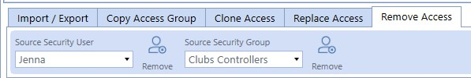
Figure 2.38
Account Reconciliations Administration › Security
Security Summary
Security is the second phase of administration because it is where you establish which Users have the ability to make changes to Reconciliation attributes (Local Admins), which Users can see which Reconciliations, and which Users can take action on Reconciliations.
With Security in the bag, let’s take a look at Administration.
* * *
Account Reconciliations Administration
Administration
Account Reconciliation Administration contains pages to define your Reconciliations, configure your Reconciliation attributes within the Inventory, configure Account Groups, create tracking levels, create Balance Check levels, create AutoRec Rules, and create notification methods.
Administration relates to the entire Account Reconciliation application. This area can only be accessed by Account Reconciliation Administrators and OneStream Administrators.
Account Reconciliations Administration › Administration
Definition
The Reconciliation Definition page is the first step in creating the Reconciliation Inventory. Within this page, you will:
Perform the Discover process – which finds the Accounts to be reconciled, based on the filter you established in Global Options.
Assign default Definitions – which are set at the T.Account, or OneStream Account Dimension level.
Assign Tracking Level Overrides – which are used if tracking levels vary by Entity.
Account Reconciliations Administration › Administration › Definition
Discover
Upon first opening this page, the Account List will appear empty. A Reconciliation Administrator can click Discover and, upon initial discovery, the system will create the Account List by first looking to the Account Member Filter that was set within the Global Options.
Figure 2.39
If the Account is within the Member Filter, the Account will be added to the Account List. In addition, OneStream looks to Stage at this point to see if a balance exists for the Account. If a balance does exist, the Reconciled column is set to True.
Upon populating the Account List, the Discover process will also automatically assign the default Reconciliation Definition of Entity, which is the lowest tracking level that includes only Account and Entity. If you wish to have a different tracking level assigned, be sure to assign it to the Global Defaults prior to clicking Discover. From there, the system then loops through the Stage data again and reads balances for the current and future Workflow periods to see if anything exists in Source to determine where Reconciliations exist for the different tracking level instances.
For example, in M1 there may be five Source Accounts imported to the Source Stage for the Petty Cash Target Account, and two Source Entities – Houston and South Houston. However, Houston and South Houston may only have balances in two of the Source Accounts. In this instance, four Reconciliations would be added to the Reconciliation Inventory in M1. Moving into M2 during Discover, both Entities’ imported balances for all five Source Accounts – six additional Reconciliations – would be added to the Reconciliation Inventory that were not created in M1, for a total of ten Reconciliations.
Discover then assigns all default Reconciliation attributes to the Reconciliation Inventory, which are configured in Global Defaults. Note that this is for the initial creation of the Reconciliation Inventory, or for any new Inventory items discovered in the prior period, (in the example above, this would be the four created in M1 and the six created in M2). If the Reconciliation was added in a prior period, and attributes were assigned, the attributes would pull from the prior period for future periods.
For example, in M1, as established, four Reconciliations were added to the Reconciliation Inventory and the default attributes were assigned. After initial attribute assignment, either the Local Admin (for Reconciliations where they are assigned) or the Reconciliation Administrator can make updates to the attributes. Note, in Figure 2.40, the default attribute that was assigned on creation was a Risk Level of Low.
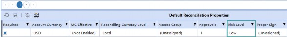
Figure 2.40
However, in M1, the Administrator has changed the Risk to Medium for the four Reconciliations.
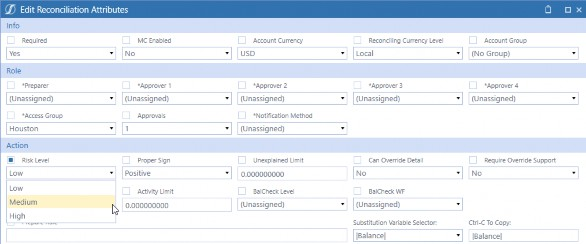
Figure 2.41
Upon clicking Discover, the attributes assigned to the new Accounts will be the default of Low, and the Reconciliations created and updated in M1 will have the attributes assigned in M1 pulled forward (Risk Level of Medium), as shown in Figure 2.42.
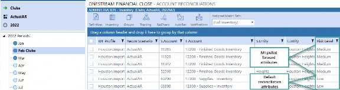
Figure 2.42
Once the discovery has been run for a period, all attributes are created. Therefore, if you were to make changes to attributes in M1 after discovery was run in M2, the M1 changes made after discovery in M2 would not be reflected in M2. Additionally, any attribute changes made in future periods will not be reflected in prior periods. In this way, the Reconciliation Inventory attributes are time-based.
Click the Task Activity icon to show the results of the discovery process and how many new Reconciliation Inventory items were discovered. You can either have the Reconciliation
Administrator manually run the discovery process, or a OneStream Administrator could utilize the Task Scheduler within the platform to automate this step.
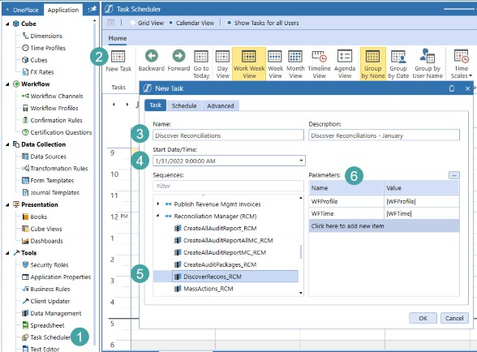
Figure 2.43
Go to Application – Task Scheduler
Select New Task
Add a Name and Description
Set the Date and Time you would like discovery to occur
Locate and select the
DiscoverRecons_RCMsequence underReconciliation Manager (RCM)Assign the Parameters – will default to parameter settings
|WF Profile| - Name of the Workflow Profile
|WFTime| - Workflow time period
Click OK
Account Reconciliations Administration › Administration › Definition
Account List
OneStream will auto populate the: 1. Account (number), 2. Description, 3. Reconciled (which is not part of the Member property and therefore auto set to True), and 4. Type based on the settings within the Account.
Figure 2.44 shows the Petty Cash Account properties in the Account Dimension, and Figure 2.45 shows the properties established upon discovery for the Petty Cash Account. Note that the properties are the same in both.
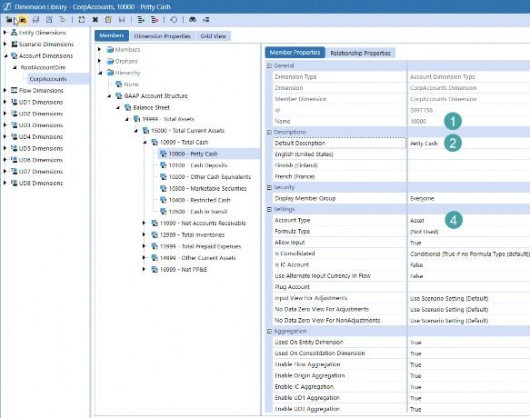
Figure 2.44
The only item that is not a property in the Account Dimension is 3. Reconciled, which is just used for Account Reconciliations. None of the properties can be changed in the Account List grid.
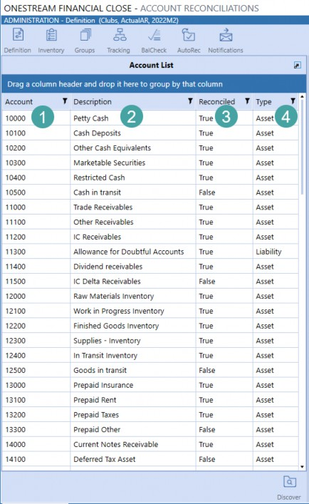
Figure 2.45
Account Reconciliations Administration › Administration › Definition
Reconciliation Definition
While each Account will have default Reconciliation properties assigned upon initial discovery, it is possible to alter the properties for each Account at any point.
Within the Reconciliation Definition, you can add (upload), view, and delete reference documents to each Account. These reference documents are your company’s internally-created documents that you would like your End-Users to be able to reference during the time of Reconciliation preparation. For example, you may want to include a set of instructions on how the Reconciliation is to be prepared, a list of required supporting documentation, etc.
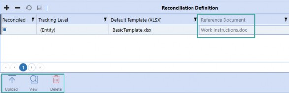
Figure 2.46
Account Reconciliations Administration › Administration › Definition
Entity Tracking Level Override
There are times when an Account needs to be tracked in the Reconciliation Inventory at a level that is an exception for certain Entities, beyond the setting for that Account in general (as set in the Reconciliation Definition).
In these cases, click + to add an exception per Entity that requires one for this Reconciliation Definition.
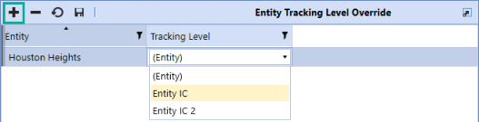
Figure 2.47
For instance, Account 10000 has a tracking level of (Entity), which means by Entity and Account. But for that same Account and Entity – Houston Heights – we may need to track this Account by Entity, Account, and IC. In this instance, a new tracking level would be created on the Tracking page; Entity Houston Heights would be selected from the drop-down, and the new tracking level – Entity IC – would be assigned.
Account Reconciliations Administration › Administration
Inventory
The Reconciliation Inventory is a Grid View and is the complete list of all Reconciliations that were created in the current or prior periods when the discovery process was run, as discussed in the Definition section. The Reconciliations displayed within the Inventory will be based on the Workflow Profile selected. As such, to see the complete listing, ensure you are at the top Parent Workflow Profile. Additionally, only a Reconciliation Administrator can view the complete Inventory; Local Administrators will only see Reconciliations where they are assigned as Local Administrator within the Access Group.
Account Reconciliations Administration › Administration › Inventory
Filters
All attributes within the Reconciliation Inventory can be filtered by utilizing the filter icon on the right of the column header. Using this filter, you can select multiple items, select all, or show only certain values, based on your own needs.
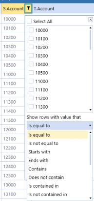
Figure 2.48
The Assigned Match Set filter has also been added to the top of the Inventory to filter important information that is not an attribute within the Inventory.
Account Reconciliations Administration › Administration › Inventory › Filters
Assigned Match Sets
This filter is only applicable for solutions where Transaction Matching Integration is enabled and is utilized to easily identify Reconciliations that have Match Sets assigned for detail item creation. The assignment of Match Sets will be discussed in the Inventory Actions section. The drop-down will contain the following:
(Full Inventory) – Complete list of Reconciliation Inventory without any filtering related to Match Sets.
(All) – All Reconciliations where one or more Match Sets have been assigned.
(None) – Reconciliations that do not have a Match Set assigned.
Match Set Name – This drop-down will contain all Match Sets that are set up within the Transaction Matching Global Settings – Match Sets. Select a Match Set to view Reconciliations that have Match Set assigned.
Account Reconciliations Administration › Administration › Inventory
Attributes
Administrators can configure and update the attributes for a Reconciliation if the Reconciliation has not been Prepared in the current Workflow Period. If the Reconciliation has been prepared, it must be placed back into an In Process state to update attributes. This is to ensure that attributes for a period are accurately reflected in the Inventory and are the same as the attributes required at the time of Reconciliation preparation. Except for those noted, all attributes are WF time-based.
Attributes that have (Multi-Currency Enabled) added to the header will only appear if this setting has been set to True within the Global Settings. The Reconciliation Inventory grid comes with all attributes showing by default.
To change the order of column headers, or to hide any columns that are not utilized by your company, (S. UDs, for example), right-click on any cell in the grid, and select Column Settings (Figure 2.49). From there, move columns to the left that you would like hidden and move columns up or down in the list of Visible Columns for ordering preferences (Figure 2.50) and select OK to Save.
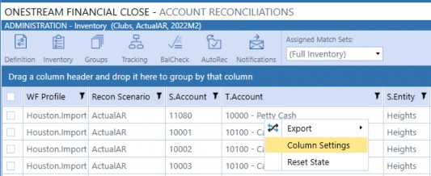
Figure 2.49
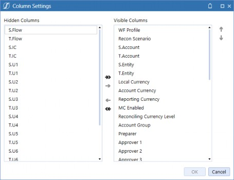
Figure 2.50
Account Reconciliations Administration › Administration › Inventory › Attributes
WF Profile
This is the Workflow Profile where the Reconciliation was discovered for the Source Account and is a Base Input Child Import Workflow Profile. In other words, this is where the data was imported into Stage for the Reconciliation. In order to perform any action on a Reconciliation, a User must have access to this Import Workflow Profile, as this is where the balances originate.
Account Reconciliations Administration › Administration › Inventory › Attributes
Recon Scenario
This will default to the Reconciliation Scenario set in Global Options.
Account Reconciliations Administration › Administration › Inventory › Attributes
S. Account
Source Account. This will be your ERP or GL Account and is the Account that is originally imported into OneStream prior to any Transformation Rules. Source Accounts are derived from that Workflow Profile’s Transformation Rules (Figure 2.51) and are based on the imported Source Values (Figure 2.52). This attribute cannot be changed.
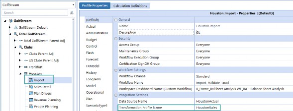
Figure 2.51
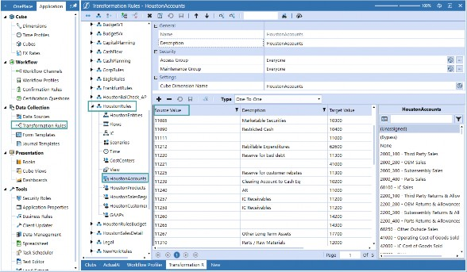
Figure 2.52
Account Reconciliations Administration › Administration › Inventory › Attributes
T. Account
Target Account for the Cube. This list of Accounts is populated by the Account Dimension for the Cube. This attribute cannot be changed.
Account Reconciliations Administration › Administration › Inventory › Attributes
S. Entity
Source Entity. This will be your ERP or GL Entity and is the Entity that is originally imported into OneStream prior to any Transformation Rules. Source Entities are derived from that Workflow Profile’s Transformation Rules and are based on the Source Values that are imported, in the same way Source Accounts are used. This attribute cannot be changed.
Account Reconciliations Administration › Administration › Inventory › Attributes
T. Entity
Target Entity for the Cube. This list of Entities is populated by the Entity Dimension for the Cube. This attribute cannot be changed.
Account Reconciliations Administration › Administration › Inventory › Attributes
S. Flow
Source Flow from Stage. This attribute cannot be changed.
Account Reconciliations Administration › Administration › Inventory › Attributes
T. Flow
Target Flow for the Cube. The list of Flows is populated by the Flow Dimension for the Cube. This attribute cannot be changed.
Account Reconciliations Administration › Administration › Inventory › Attributes
S. IC
Source Intercompany from Stage. This attribute cannot be changed.
Account Reconciliations Administration › Administration › Inventory › Attributes
T. IC
Target Intercompany for the Cube. The IC list is populated by the IC Dimension for the Cube. This attribute cannot be changed.
Account Reconciliations Administration › Administration › Inventory › Attributes
S. U1 – U8
Source User Dimensions from Stage. The Source UDs are derived from that Workflow Profile’s Transformation Rules and are based on the Source Values that are imported, in the same way Source Accounts are used. This attribute cannot be changed.
Account Reconciliations Administration › Administration › Inventory › Attributes
T. U1 – U8
Target User Dimensions for the Cube. This list of UDs is populated by the specific UD Dimension (UD1-8) for the Cube. This attribute cannot be changed.
Account Reconciliations Administration › Administration › Inventory › Attributes
Currency (Single-Currency) or Local Currency (Multi-Currency Enabled)
Currency type for the Local-level balance. It is not editable within Account Reconciliations as it is maintained within the Entity Dimension.
Account Reconciliations Administration › Administration › Inventory › Attributes
Account Currency (Multi-Currency Enabled)
Currency type for the Account-level balance. This will be a drop-down of all currency types within the currency filter in Application Properties. The default currency type will be set to Local and will therefore be the T. Entity’s currency type. This may be changed by selecting a different currency from the drop-down.
The currency type may be changed after a multi-currency Reconciliation has been completed. The currency type labels will change for all periods, including previously completed Reconciliations, which may have been completed using the original currency type. If having historical Reconciliation balances translated to the updated currency type is desired, prior periods must be unlocked and Reconciliations reprocessed if the Account currency type is modified.
Account Reconciliations Administration › Administration › Inventory › Attributes
Reporting Currency (Multi-Currency Enabled)
Currency type for the Reporting-level balance. This is not editable as it is derived from the Cube currency. Only a single reporting currency is allowed per Cube.
Account Reconciliations Administration › Administration › Inventory › Attributes
MC Enabled (Multi-Currency Enabled)
This is a check box that, by default, is set to False, meaning the Reconciliation will be a single-currency Reconciliation, only the Local balance will be used, and no Translation will occur. If set to True, the Reconciliation will show three currency levels on the Reconciliation header: Account, Local, and Reporting.
This setting provides the ability to have single-currency Reconciliations and multi-currency Reconciliations within the same Account Reconciliation instance. Multi-currency Calculations, including Translation, will not occur in periods where this setting is False. As the attribute is time-based, you may have a single-currency Reconciliation in the first period, multi-currency in the second, and then go back to single-currency in the third, and appropriate Translation would occur for only the periods required.
Determining whether multi-currency is useful for your organization is an important consideration to take into account during implementation. While Account currency may not be used/required, being able to see reporting within the Reconciliations page may be helpful. In this instance, where only two currency levels exist (e.g., Local and Reporting), it is recommended that multi-currency be enabled, the Account currency default set to Local, and the MC Enabled be set to True for each Reconciliation.
Account Reconciliations Administration › Administration › Inventory › Attributes
Reconciling Currency Level (Multi-Currency Enabled)
This determines the currency level – either Account, Local, or Reporting – to be used for the Reconciliation. The default is Local, as this is the level that was previously reconciled prior to multi-currency enablement. This reconciling level applies to the Unexplained Limit, Prepare Rules, AutoRec, Balance Change, and Balance Checks. For example, if the Unexplained Limit for a Reconciliation is set to 0, the reconciling currency level is set to Account, and the Unexplained Limit is 0 for the Account level but 100 for the Local, then the Reconciliation could be prepared.
However, if the reconciling currency is set to Local in the example above, the Reconciliation could not be prepared.
The reconciling currency level is easily identified as it is the level in larger, bold font.
Figure 2.53
Account Reconciliations Administration › Administration › Inventory › Attributes
Account Group
A drop-down list of all Account Groups created by the Account Reconciliation Administrator. If an Account Group is selected for the Reconciliation, the Reconciliation will become part of the Account Group upon Save. If set to (No Group) the Reconciliation is reconciled individually. If the User is a Local Admin, the list of Account Groups is limited to only those they manage. The Local Admin can change the assignment of a Reconciliation Inventory item to a different Account Group, but once assigned, they are unable to set as (No Group).
Account Reconciliations Administration › Administration › Inventory › Attributes
Preparer (Not Time-Based)
This is the Primary Preparer for the Reconciliation. The drop-down list contains all enabled Users within the Platform system security. In order to minimize Access Groups created, and for the auditability of role assignments, it is encouraged to have a Primary Preparer assigned. However, if a Preparer is assigned in the Access Group assigned to the Reconciliation, this is not required.
Unlike other attributes, Preparer, Approver 1-4, and Access Groups are not time-based. This is so that if a role changes, the new User has the ability to utilize prior Reconciliations for reference, and so that people removed from roles no longer have the ability to take action on Reconciliations.
Account Reconciliations Administration › Administration › Inventory › Attributes
Approver 1 – 4 (Not Time-Based)
These are the Primary Approvers, Levels 1-4, for the Reconciliation. The drop-down list contains all enabled Users within the platform system security. In order to minimize Access Groups created and for the auditability of role assignments, it is encouraged to have a Primary Approver assigned. However, if an Approver is assigned in the Access Group assigned to the Reconciliation, this is not required.
At least one Approver must be set up for each Reconciliation, and the number of Approvers assigned must align with the number of approvals required. Once a User is assigned to a primary role, they cannot be assigned to another primary role. For example, if Grayson is the Preparer assigned on the Reconciliation Inventory, he cannot be assigned as the Approver 1 as well, in order to enforce segregation of duties. Further, if no Primary Approver 1 was assigned on the Inventory, at least one would need to be assigned within the Access Group assigned to the Reconciliation.
Account Reconciliations Administration › Administration › Inventory › Attributes
Access Group (Not Time-Based)
If desired, assign Access Groups created within the Access Control in Settings. As discussed previously, this is where you will assign Viewer, Commenter, and Local Admin roles, in addition to any backup Preparer or Approver roles. Again, Preparers and Approvers do not need to be included in an Access Group if a Primary has been assigned. However, it is always helpful to have these backups assigned in case of absence. Additionally, a User can be assigned as a Primary role and can still be a backup role within the Access Group. However, upon performing any action on the Reconciliation, the User will not be able to perform further action on the same Reconciliation.
Let’s walk through an example of when a Primary may also be assigned as a backup. Assume the Preparer, Grayson (discussed above), works in the Shared Services Department and is primarily responsible for Accounts Payable Reconciliations. As such, he is assigned as the Primary Preparer on the Reconciliation Inventory for all AP Reconciliations. His co-worker, Cooper, also works in Shared Services and is primarily responsible for Accounts Receivable Reconciliations. As such, he is assigned as the Primary Preparer on the Reconciliation Inventory for all AR Reconciliations.
However, in the case of absence, Grayson can prepare Cooper’s Reconciliations, and vice versa. In this instance, we would create an Access Group called Shared Services, add both Grayson and Cooper as Preparers within the Group, and assign that Access Group to all the AP and AR Reconciliations.
Account Reconciliations Administration › Administration › Inventory › Attributes
Approvals
Use this drop-down to select the number of approvals (1 through 4) that are required for the Reconciliation. Ensure that the number of Approvers assigned to the Reconciliation aligns with the number of approvals required.
Account Reconciliations Administration › Administration › Inventory › Attributes
Risk Level
Choose from High, Medium, or Low risk for this attribute. As with other time-based attributes, you may want to frequently change this attribute to help identify when more review needs to be done on a Reconciliation. For example, an Account may have no activity due to initial start-up in the first few months, so it is set to low risk. However, the balance of the Account may increase, requiring you to increase the risk. This attribute is often also used when compiling AutoRec and Prepare Rules.
Account Reconciliations Administration › Administration › Inventory › Attributes
Proper Sign
The choices in the drop-down are Unassigned, Positive, or Negative. Assign what sign the value should come in for the Reconciliation. For example, if your liabilities come in as negative, assign Negative for all your liabilities. If a balance comes in that is not the proper sign, based on this configuration, you can easily filter that balance out within the Reconciliation Workspace, discussed later.
Account Reconciliations Administration › Administration › Inventory › Attributes
Unexplained Limit
This will set whether a Reconciliation can be prepared if the explained value is within a certain absolute value threshold. By default, a Reconciliation is not prepared unless the balance is explained to the penny. If the Unexplained Limit is set to 1000 and the Currency is USD, then the Reconciliation can be prepared if the difference is explained within $1000 USD.
Account Reconciliations Administration › Administration › Inventory › Attributes
Prepare Rule
These are custom rules that create restrictions on when a Preparer can mark the Reconciliation as Prepared. Rules created here will override the Unexplained Limit.
Example 1:
|Balance| < 1000
Example 2:
|BalanceAccount| < 1000
Example 3: This logic will set a global unexplained limit based on currency by retrieving the closing FX rate for the individual Reconciliation’s currency relative to USD.
|UnexplainedBalance| < XFBR MyCustomBusinessRule,UnexplainedLimitHelper,Currency=|Currency|, Time=|Wtk|)
Account Reconciliations Administration › Administration › Inventory › Attributes
AutoRec Rule
This is a drop-down list populated from the list of rules created within the AutoRec page. The default is set to (Unassigned), meaning the Reconciliation does not have an AutoRec Rule applied. See the AutoRec section for more information on how to create and maintain these rules.
A second item, (Legacy), will exist in all solutions which first checks the balance to see if it is zero and, if so, will automatically reconcile that Reconciliation. Otherwise, it checks the activity in this Reconciliation since the last period and compares it to the absolute value of the Activity Limit.
Account Reconciliations Administration › Administration › Inventory › Attributes
Activity Limit
If an AutoRec Rule is created that has Activity selected, the rule will check the activity (differences in balance) in this Reconciliation since the last period and compare it to the absolute value of the activity value calculated. For instance, if the balance was explained last month at $1000, the new balance is $100, and the Activity Limit is $500 – this Reconciliation would not automatically reconcile. This column is only used in instances where an AutoRec Rule is assigned, and that rule contains an Activity component.
Account Reconciliations Administration › Administration › Inventory › Attributes
BalCheck WF Profile
Reconciliations that are supported using alternate source data files are considered Balance Check Reconciliations. For example, you could bring in your detailed Accounts Receivable Register from your AR software to support the GL balance. Assigning a Workflow Profile Import will make the Reconciliation a Balance Check type. When data is loaded into this BalCheck WF Profile, Account Reconciliations will pull the balances from the BalCheck WF Profile – based on the BalCheck Level assigned – and create a B-Type detail item for the Reconciliation. If the balance pulled ties to the Reconciliation balance, the Reconciliation would automatically reconcile.
To create a BalCheck Import to be included in the drop-down:
Create an Import step under the WF Profile.
Select the Model Scenario.
Set the Profile Active to True. (Make sure this is True for the Scenario referenced in the Global Settings for Reconciliation Scenario, or Model in our example, as OneStream only looks to that Scenario to populate the drop-down.)
Select the Data Source Name.
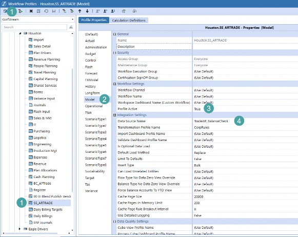
Figure 2.54
Account Reconciliations Administration › Administration › Inventory › Attributes
Multi-Currency Solutions
Loading in detail amounts, detail currency types, Account level, and Reporting level balances requires identifying the columns related to these items within the Data Source.
| Note: Detail amount represents the transaction amount, which could be in a currency type that is different to any Reconciliation currency level, and is different to what is loaded for single-currency solutions since they just load Local currency balances. |
Detail amounts, Account amounts, and Reporting amounts need to be set to the data type of Attribute Value, and Detail currency needs to be set to the data type of Attribute. Local amounts must exist for BalCheck to properly translate and calculate; if null, values will not translate. As such, ensure null values are replaced with zeros.
Figure 2.55
Account Reconciliations Administration › Administration › Inventory › Attributes
BalCheck Level
This is a drop-down list populated from the list of levels created within the BalCheck page. The default is set to (Unassigned), meaning the Reconciliation does not use Balance Check. In order to ensure the balances being pulled from the support are aligned within the Reconciliation, Balance Check-level granularity must match that of the tracking level. Therefore, if the Reconciliation’s tracking level includes UD1, the Balance Check that supports that Reconciliation should also include UD1.
Account Reconciliations Administration › Administration › Inventory › Attributes
Allow Override (Multi-Currency Enabled)
When set to True, the ability exists to override translated Account, Local, and Reporting amounts for detail items. If FX rates exist for the current period, upon Save (creation) of a detail item, OneStream will automatically translate the Account, Local, and Reporting amounts. If Allow Override is enabled, the ability exists to manually input amounts for any of the currency levels. If only one level is overridden, the other translated balances will remain. Similarly, if FX rates have not been entered for the current period and a level is overridden, the override balance will appear and the amounts to be translated will appear as zero. Amounts that are overridden will hold, period over period, if a detail item is pulled forward.
When an amount is overridden using zero, OneStream automatically retranslates the amount using the rates in the FX rates table. If showing a zero balance for a currency level is required, a new detail item must be created with a detail amount of zero, and enter the opposite balance for the currency level that needs to be set to zero (i.e., offset balance).
Account Reconciliations Administration › Administration › Inventory › Attributes
Override Support Required (Multi-Currency Enabled)
When set to True, supporting documentation – either an I-Doc or R-Doc – is required for all detail items with translated amounts that were manually overridden. Note that an S-Doc will also satisfy this requirement.
Account Reconciliations Administration › Administration › Inventory › Attributes
Preparer Workday Due
Type in any integer value, negative or positive, to indicate which close day the Reconciliation must be prepared by. OneStream will look to the close date for the Workflow period and, based on that date and the Preparer workday due, will calculate the calendar date that the Reconciliation must be prepared by. Note that Account Reconciliation does not take holidays or weekends into account when calculating the calendar date due. As such, make sure you take these dates into account for each period and note that workdays due may vary from period to period. For example, assume day 1 of close for October is Friday, October 1, as shown in Figure 2.56. In accounting terms, it is assumed that day 2 would be Monday, October 4; however, for purposes of workday assignments, you would select workday due of 4 – four days – after day 0 (September 30).
Figure 2.56
Account Reconciliations Administration › Administration › Inventory › Attributes
Approver Workday Due
Type in any integer value, negative or positive, to indicate which close day the Reconciliation must be fully approved by. OneStream will look to the close date for the Workflow period and, based on that date and the Approver workday due, will calculate the calendar date that the Reconciliation must be fully approved by. This date is also used to determine how many days until the Reconciliation is due and when it is past due.
Account Reconciliations Administration › Administration › Inventory › Attributes
Frequency
This is a text input field that determines how often the completion of this Reconciliation Definition is required. The default is 1-12, which indicates months 1-12. This can be 3,6,9,12 if quarterly is required, or enter another type of frequency expression.
Account Reconciliations Administration › Administration › Inventory › Attributes
Template
The template assigned will default to what is set for the Target Account in the Reconciliation Definition. The template assigned can be changed to any templates stored within the Reconciliation Templates under Settings.
Account Reconciliations Administration › Administration › Inventory › Attributes
Notification Method (Not Time-Based)
This is a drop-down list populated from the list of methods created within the Notifications page. The default is set to (Unassigned), meaning the Reconciliation does not have a notification method applied. See the Notifications section for more information on how to create and maintain these methods.
Account Reconciliations Administration › Administration › Inventory › Attributes
Required
By default, this is set to True. If the Reconciliation is no longer required to be completed, set this to False. Once a Reconciliation has been prepared, it cannot be deleted from the Inventory, regardless of which Workflow period you are in for audit purposes. As such, all Reconciliations that are not required are displayed at the end of the Reconciliation Inventory by default.
Account Reconciliations Administration › Administration › Inventory › Attributes
Update User
The User who last updated an attribute for the Reconciliation.
Account Reconciliations Administration › Administration › Inventory › Attributes
Update Time
The date and time an attribute was last updated for the Reconciliation.
Account Reconciliations Administration › Administration › Inventory › Attributes
Discovery User
The User who ran the discovery process that created the Reconciliation.
Account Reconciliations Administration › Administration › Inventory › Attributes
Discovery Time
The date and time a Reconciliation was first discovered, or an Account Group was created.
Account Reconciliations Administration › Administration › Inventory
Inventory Actions
The icons at the bottom of the Reconciliation Inventory allow you to make updates and changes to the Inventory. To view the icons at the bottom, click on any Reconciliation within the Inventory grid.
Account Reconciliations Administration › Administration › Inventory › Inventory Actions
Edit
To edit any of the Reconciliation attributes, select the checkbox on the far left of the Inventory and then click the Edit icon. To edit all Reconciliations within the Inventory at once, select the checkbox at the top.
Figure 2.57
Upon clicking Edit, a dialog will appear with all Inventory attributes. If a single Reconciliation is selected, the attributes defined for that Reconciliation will be displayed. If multiple Reconciliations are being edited at once, the attributes for the first Reconciliation selected will be displayed.
To edit an attribute, select the checkbox next to the attribute, such as Access Group, shown in the example in Figure 2.58. Depending on the attribute type being edited, there will be either a drop-down or a text box input.
Figure 2.58
The check box selection is designed to ensure that changes being made are intentional and to ensure only attributes needing to be changed are appropriately updated. Otherwise, all Reconciliations that are selected would have their attributes changed to mirror the first Reconciliation selected (the default display).
The grid at the bottom of the dialog lists all Reconciliations that are being edited. If the status is a green circle and the Message column is blank, the Reconciliation has not yet been prepared for the period and the attribute that has been selected will be updated for the Reconciliation, as shown in Figure 2.58. If the status is locked, the Message column states Reconciliation has been prepared for the period, as shown in Figure 2.59. As the Reconciliation has been prepared for the period, the attribute that has been selected will not be updated for the Reconciliation.
Figure 2.59
Account Reconciliations Administration › Administration › Inventory › Inventory Actions
Delete
To delete a Reconciliation from the Inventory, select the checkbox on the far left of the Inventory and then click the Delete icon. A Reconciliation may not be deleted if it has been prepared in any period.
Account Reconciliations Administration › Administration › Inventory › Inventory Actions
Export
While the edit dialog is very User-friendly and allows an Administrator to easily visualize changes being made on the fly, it may not be ideal for an initial implementation. As a reminder, upon initial discovery, all Reconciliations will have the same default attributes, which is often not accurate for most customers, and attributes need to be edited en masse.
For implementations, utilization of the Export feature allows consultants to export the entire Reconciliation Inventory as a CSV file that is opened in Excel. In order to import the changes made in Excel, a named range must be added to the file starting with the letters xft, covering appropriate rows starting with the cell with the word Application in the top-left cell. This file should then be saved in Excel xlsx format.
Account Reconciliations Administration › Administration › Inventory › Inventory Actions
Import
Once the updates have been made and the file is saved in the appropriate format, click the Import icon, which will open a file explorer dialog. Select the Excel or CSV created to merge changes. It is necessary for the User to close this file before importing it. This button is not accessible by Local Admins.
Account Reconciliations Administration › Administration › Inventory › Inventory Actions
Template
When you click the Template icon, a pre-filled Excel Template for the loading of Account Groups will open. Note that some field entries (such as WF Profile, Recon Scenario) must start with !
because the import process replaces those text values with a long numeric key. This button is not accessible by Local Admins.
Account Reconciliations Administration › Administration › Inventory › Inventory Actions
Access
Selecting this icon will open a dialog to update the Access Group Members, both Users and Groups, for the Reconciliation that is selected. Note that because Access Groups assigned to Reconciliations could vary rec to rec, you can only select one Reconciliation at a time for this icon to appear.
Account Reconciliations Administration › Administration › Inventory › Inventory Actions
Match Sets
This icon will only appear when Transaction Matching Integration is enabled in Global Options. Once integration is enabled, select this icon to assign one or many Match Sets to the Reconciliation.
If you assign multiple Match Sets, when in Account Reconciliations, and you pull detail information from Transaction Matching to create detail items, a drop-down will appear to select the Match Set from which you would like to create detail items. Once you select the Match Set from the drop-down, all transactions related to that Reconciliation, based on the mapping set up in Transaction Matching, will appear as available to create detail items. This means that transactions from all Match Sets assigned – that have mapping aligned with the Reconciliation tracking level – will be available to create detail items.
Details on how to create the detail items from Transaction Matching are discussed in more detail in Chapter 6. Creating detail items from Match Sets cannot be assigned to Account Groups at this time.
Account Reconciliations Administration › Administration
Groups
Account Groups provide the ability to combine multiple individual Reconciliations into a single item to be reconciled. This allows you to have fewer Reconciliations to prepare but still allows you to see the granularity of the Child Reconciliation balances, thereby providing the means to identify possible misstatements at the source level.
An example of when an Account Group may be used would be if you have multiple Source Accounts all rolling up to the same Target Account.
| Note: Remember, your Source Accounts are your GL Accounts, and your Target Accounts are your Financial Statement Accounts, or those held in the OneStream Account Dimension. |
You may want to look at your cash balance in total, not at each source/GL level. In this instance, an Account Group would help your organization. Additionally, you may want to look at the Cash Account in total – after Translation – since you have a global organization with different Local currencies. In this instance, you can utilize OneStream’s Translation capabilities to take those Account and/or Local balances and translate up to the Reporting currency level. When an Account Group is being reconciled, the experience of performing a Reconciliation is the same as at a Child Rec level, in terms of adding attachments and comments, preparing, and approving, etc. This is discussed more in Chapter 4.
To create an Account Group, select the Create icon in the middle of the Groups page. Within the Create Group dialog, you must provide an Account Group name and assign the following attributes within the Info section:
Workflow Profile: This is the Workflow Profile where this Account Group will be shown for reconciling. This can be either a Review level or Base Input Import-level Workflow Profile.
T.Account: Target Account in the Cube. This will help filter results and guide the drill down process.
S.Account (Display Name): Source Account. This is a text field box that is to be defined by you. Use the display name to notify the User as to what type of Account Group this will be.
T.Entity: Target Entity in the Cube. Specify an Entity; the Entities to which this Account Group are applied, however, are more related to the Source Accounts from the Reconciliation Inventory. Depending on the Reconciliation Inventory items added to this Account Group, there could be many Target Entities. This will help filter results and guide the drill down process.
S.Entity (Display Name): Source Entity. This is a text field box that is to be defined by you. Use the display name to the User to reflect what Type of Entity this will be. The Entities seen when preparing Reconciliations are those related to the Workflow Profile.
Figure 2.60
| Note: All Info attributes that must be assigned to an Account Group have an asterisk in front of the title. These attributes must be assigned because they are not part of the default Reconciliation properties and are assigned only to Account Groups. Additionally, these attributes are not time-based, meaning if they are edited, the change will be reflected in all time periods. Figure 2.60 shows the area of the Create Group dialog that contains the attributes that are assigned only to Account Groups. |
Account Reconciliations Administration › Administration › Groups
Single-Currency Solutions
Account Groups should be created for the same Local currency type since, by an Account Group’s nature, the untranslated source data will be aggregated together for analysis. Again, this is because single-currency applications do not translate balances. For example, if there is a person who reconciles all the Fixed Asset Accounts, first create an Account Group for each Local currency type to be reconciled, and then add Accounts with the same Local currency type to each of these Groups from the Reconciliation Inventory.
Account Reconciliations Administration › Administration › Groups
Multi-Currency Solutions
Account Groups may be created using any currencies included in Application Properties and maintained in the FX Rates grid. The Account Group will be a single Reconciliation for the translated aggregate of the Source Account, Local, and Reporting currencies. For example, if a company reconciles all Intercompany Accounts at a consolidated level and the Local currencies are different, a multi-currency Account Group may be created to reconcile the related Accounts in a single, consolidated currency. First, each currency level is translated to the Account Group currency and then aggregated. When creating a new multi-currency Account Group, both Account and Local currency must be selected for the Group for multi-currency enablement. After the Account and Local currencies are selected, multi-currency Account Groups are reconciled the same as single-currency, in that detail items are used to support the aggregate balance of all Child Reconciliations.
Once an Account Group has been created, you can assign that Group to individual Reconciliations within the Inventory. When an Account Group is assigned to a Reconciliation, the attributes of the Account Group are assigned to the individual Reconciliation, as shown in the message of the Edit dialog in Figure 2.61.
Figure 2.61
Account Reconciliations Administration › Administration › Groups
Changes to Account Groups
Attributes of Account Groups and Child Memberships within Account Groups can change over time. Below are the effects of this:
If a Reconciliation that was previously reconciled individually is added as a Child of an Account Group, the individual Reconciliation Inventory item can be reviewed in historical periods with its previous balance.
If a Child Reconciliation is removed from an Account Group, it will retrieve its balance and the state of the Reconciliation will be Balance Changed.
If the Children that compose the Account Group change over time, the total balance for the Group previously stored for a WF Period will not change in historical periods if the Account Group Reconciliation was Approved, even if Process is executed again in that period. The Approved balance is essentially locked. If Process is executed again against an Account Group whose members have changed, and the Reconciliation for the Group is not Approved, the balance will change for the Group based on current Child Memberships.
If a new Account Group is created and existing Reconciliations that have a history are added as Children, the Account Group will not have any historical activity in prior months as the Account Group did not exist.
If an Account Group has all of its Children removed, it is recommended to have the Account Group be auto reconciled because – from that point forward – the balance for the Group will be zero. If the Account Group that now has no Children had Child Reconciliations that were reconciled individually in the past, it is advised to clear the required attribute for the Account Group in order for the individual historical Reconciliations to be audited. Note that in previous periods, where the Account Group Reconciliation was fully Approved, the balance and membership will remain for audit purposes.
When a new Account Group is created after prior periods have been processed, it would show a state of In Process.
Process Warning: When a Reconciliation is removed from an Account Group, a Process will need to be done by an Account Reconciliations Administrator or Application Administrator at the review-level Workflow Profile to ensure that all Account Groups and Reconciliation balances are updated. When this occurs, a warning icon will appear next to the Process button on the Workflow page. This warning icon will be removed for Users after an Administrator processes the Reconciliations and the Workflow page is refreshed.
A Child Reconciliation will inherit the attributes of the Account Group when added to the Group. For example, if a single Reconciliation had a risk ranking of high and was then added to an Account Group with a low risk ranking, the risk ranking of the individual, or Child Reconciliation, would be low upon save. The exceptions to this rule are those attributes that are set at the time of Account Group creation and discussed above (WF Profile, S. Account, T. Account, S. Entity, and T. Entity) and Account and Local currency. The two currencies are not inherited for multi-currency purposes. These attributes, which are specific to individual Child Reconciliations, are easily identified within the grid at the bottom of the page as they have a blue background, as shown in Figure 2.62.
Figure 2.62
| Note: It is the Account Group’s attributes that are referenced within OneStream for Reconciliation purposes, but for audit purposes – and to allow for consistency – these attributes are aligned. Additionally, if an individual Reconciliation is removed from an Account Group, the attributes it had while part of the Account Group will remain at the time of removal. Therefore, in our example above, the Reconciliation’s risk level would remain low upon removal; it would not revert to high. |
Like single Reconciliations, Account Groups may be edited, deleted, imported, and exported. These actions are discussed in the Inventory Actions section. One item to note is that a Group may not be deleted if an individual Reconciliation is assigned. The number of individual Reconciliations assigned is noted in the Child Count column within the top grid.
Additionally, you may clone an Account Group. This action will replicate all attributes of the original Account Group selected. Upon selecting the icon, the Create Account Group dialog will appear with all attributes assigned. From there, you will need to give the Group a name and you may change any attributes necessary.
| Note: Cloning will not assign the Children to the clone, as they are already assigned to the original Account Group, and each individual Reconciliation may only be assigned to one Account Group. To assign the Child Reconciliations, you must now go to the Inventory page and edit the Reconciliations to be added. |
Account Reconciliations Administration › Administration
Tracking
This page is used to create the granularity of the Reconciliations. By default, OneStream provides a tracking level of Entity, which means Reconciliations will be discovered for instances where the Source and Target Entity are different, and when Source and Target Accounts are different. An example of this default was explained in the Global Defaults section of Settings. When creating tracking levels, Entity and Account will always be part of the tracking level; therefore, the first column – Entity Active – cannot be set to False. You can take the granularity beyond Entity and Account by creating a new tracking level and selecting the Dimensions you would like to have Reconciliations to be split out by, if that Dimension is also included in your import. The more Dimensions you include will result in more Reconciliations. For example, your Accrued Payroll may be broken out by Cost Center, which you have set as your UD4. In this instance, you would create a new tracking level, click UD4 to True, and save the new tracking level, called Entity Cost Center in Figure 2.63.
Figure 2.63
Next, assign this tracking level to the Payroll Accrual Account on the Definition page, as shown in Figure 2.64. Upon discovery, the Payroll Accrual Account would then be broken out by Entity, Account, and UD4 (Cost Center). As the tracking levels will be applied upon discovery, it is important to add the additional tracking levels, outside of the Entity default, prior to running discovery. Once a Reconciliation has been discovered and added to the Inventory, it cannot be deleted if it has previously been prepared. So, in this example, had we not added the Entity Cost Center tracking level to the Accrued Payroll Account, the Account would have only been broken out by Entity and Account on initial creation. If the Entity Cost Center was later assigned, you would see the original Reconciliations broken out by only Entity and Account and then see Reconciliations broken out by Entity, Account, AND Cost Center.
Figure 2.64
Account Reconciliations Administration › Administration
Balance Check
The Balance Check page is used to create the level of Balance Check granularity, similar to how we create tracking level granularity on the Tracking page. Here, you can create Balance Check levels that will populate the drop-down list on the Reconciliation Inventory for BalCheck Level. Balance Check levels can be created for any single Dimension or combination of Dimensions. This allows balances being pulled from a single source file to be split to the corresponding Reconciliations at the same granularity of detail as is provided within tracking levels. Therefore, to ensure the balances being pulled from the support are aligned within the Reconciliation, Balance Check-level granularity must match that of the tracking level.
Figure 2.65
There are several types of Balance Check levels that are prepopulated within the solution:
All Entities & Accounts: As long as the assigned Transformation Rules pass their test, then there is included functionality to pull the Balance Check figure into the Reconciliation as an explanation.
T.Entity: Works by filtering the Balance Check items loaded to the Stage to just the values that match the Target Entity of the selected Reconciliation that references the Balance Check Workflow Stage data.
S.Entity: Works by filtering the Balance Check items loaded to the Stage to just the values that match the Source Entity of the selected Reconciliation that references the Balance Check Workflow Stage data.
T.Account: Works by filtering the Balance Check items loaded to the Stage to just the values that match the Target Account of the selected Reconciliation that references the Balance Check Workflow Stage data.
S.Account: Works by filtering the Balance Check items loaded to the Stage to just the values that match the Source Account of the selected Reconciliation that references the Balance Check Workflow Stage data.
T.Entity & T.Account: Works by filtering the Balance Check items loaded to the Stage to just the values that match the combination of Target Entity and Target Account of the selected Reconciliation that references the Balance Check Workflow Stage data.
S.Entity & S.Account: Works by filtering the Balance Check items loaded to the Stage to just the values that match the combination of Source Entity and Source Account of the selected Reconciliation that references the Balance Check Workflow Stage data.
T.Entity & S.Account: Works by filtering the Balance Check items loaded to the Stage to just the values that match the combination of Target Entity and Source Account of the selected Reconciliation that references the Balance Check Workflow Stage data.
Account Reconciliations Administration › Administration
AutoRec
The AutoRec page is used to create custom rules to automatically reconcile Reconciliations, based on criteria created by you. Here, you can create and maintain a rule in a single place that can be applied to multiple Reconciliations. Changes to any part of a rule’s expression, support types allowed, etc., can be made to the rule, and those changes will apply to all Reconciliations where the rule is assigned.
The page is accessible by Reconciliation Global Administrators and OneStream Administrators. Rules can be created to either automatically prepare a Reconciliation or fully approve a Reconciliation, meaning no other action is necessary. For all checkboxes related to detail item support types, if the box is selected, a Reconciliation will be permitted to auto reconcile if that Item Type exists. Zero Balance, Activity, and Expression are criteria that must be met to allow for
Automatic Reconciliation. If Zero Balance and Activity are both selected, both criteria must be satisfied in order to automatically reconcile.
| Note: It is recommended not to change the name of the rule once it has been used. This is because the information on the history of the Reconciliation will show the rule name at the time the rule was applied. If the name has changed, it may be hard to determine which rule was applied. |
Account Reconciliations Administration › Administration › AutoRec
Prepare Only
Set this column to True if you want the Reconciliation to only go to an Auto Prepared state, meaning that approval is required for the Reconciliation. Often, customers will utilize this feature for Reconciliations that only need to be reviewed on a quarterly basis. For example, if you have low risk accounts that are Auto Approved, and no review is performed in M1 and M2, you could set a rule to where this checkbox is not selected for those periods. However, in M3, you could create a rule where Auto Preparer Only is set to True, apply the new rule on the Reconciliation Inventory, and – upon Process – the Reconciliation will only Auto Prepare. In this instance, an Approver would need to approve the Reconciliation for it to go to a Fully Approved state.
Account Reconciliations Administration › Administration › AutoRec
B-Items
B-Items are Balance Check items, so if this box is selected and a B-Item is provided to support the Reconciliation (and other criteria are met), the Reconciliation will automatically reconcile. Bank statement balances are an example of a frequently used B-Item, so let’s use a bank statement as an example. To create an AutoRec Rule that will fully approve the Reconciliation:
Click + to add a new line.
Name the rule.
Set the B-Items column to True.
Add an Expression to qualify when the Reconciliation can AutoRec.
In the Balance Check Only Rule, in Figure 2.66, if the Unexplained Balance is greater than -1 and the Unexplained Balance is less than 1 (meaning if the balance is between 1 and -1), the Reconciliation will automatically reconcile and will show a state of Auto Approved, meaning no further action is necessary. Note that the B-Item box is checked in this rule, meaning the Reconciliation would auto complete if a B-Item existed; however, the B-Item is not required.
Figure 2.66
Account Reconciliations Administration › Administration › AutoRec
I-Items
Again, this column relates to detail item support; therefore, if this column is selected, a Reconciliation will be able to AutoRec if an item individually created in the current period exists.
Walking through our Balance Check example, let’s assume we used a bank statement to support our cash Reconciliation and the B-Item does not agree with the Reconciliation balance. In that instance, the Preparer would need to create an I-Item to explain the variance. If the I-Item column were selected, after the Preparer added the I-Item and Process was run, the Reconciliation would go to Auto Approved. Would you want the Reconciliation to go to the state and not have the
Reconciliation reviewed and approved? Probably not, since manual intervention occurred on the Reconciliation. For that reason, you would not check the I-Item column in this instance. However, let’s say the Reconciliation balance is immaterial, less than $100, and is low risk. In this instance, you could create a rule where I-Items are allowed and create an Expression, as shown in the example in Figure 2.67. In this example, the Reconciliation will be Auto Approved after an I-Item is added and Process is run, if the Balance is less than $100.
Figure 2.67
Account Reconciliations Administration › Administration › AutoRec
S-Items
If selected, a Reconciliation will be able to AutoRec if multi-period templates or S-Items are used to support the reconciling currency balance. The booked period for the S-Item must be prior to the current Workflow period. If the S-Item was created in the current Workflow period, AutoRec functionality will be prohibited.
An example of an S-Item would be an amortization template for a fixed asset. When the amortization support is initially created, and used to support a Reconciliation, the Reconciliation would not AutoRec. However, in future periods, if the amortization support is pulled forward and ties to the Reconciliation balance, the Reconciliation will move to an Auto Approved state upon Process.
Account Reconciliations Administration › Administration › AutoRec
X-Items
X-Items are items that are created from Transaction Matching. These items can be either pushed from Transaction Matching, or pulled from Account Reconciliations. If this column is set to True, and the X-Item support ties to the reconciling currency balance for the Reconciliation, the Reconciliation will move to an Auto Approved state upon Process.
Account Reconciliations Administration › Administration › AutoRec
Pulled Items
This relates to all detail items pulled from prior periods. If this is selected, any item pulled from a prior period will allow the Reconciliation to AutoRec. For example, assume in M1 that you create an I-Item to support the balance within the Unexplained Limit. In M2, the balance for the Reconciliation does not change and you pull forward the I-Item created in M1. After pulling the item forward, and running Process, the state will move to Fully Approved, as the balance is now fully supported.
Account Reconciliations Administration › Administration › AutoRec
Zero Balance
If selected, the Reconciliation will automatically reconcile if the balance for the period is zero.
Account Reconciliations Administration › Administration › AutoRec
Activity
If selected, the Reconciliation will automatically reconcile if the reconciling currency has not changed or if the activity for the reconciling currency is within the activity limit threshold established in the Reconciliation Inventory.
Account Reconciliations Administration › Administration › AutoRec
Expression
This is a text box that allows for User-defined text. Rule logic can include any item from the
Substitution Variable Selector, so utilize this drop-down to facilitate expression creation.
OneStream uses an ADO.NET data table-calculated column to interpret expressions, so there is no OneStream parser logic involved. Choices from the Substitution Variable Selector can be used to make these more dynamic. The expression evaluator supports the following operators and more:
l And, Not, In, Between, Like, Null, Or, Trim
Open bracket ‘(‘ and close bracket ’)’
<=, >=, <>, =
+ (addition)
- (subtraction)
* (multiplication)
/ (division)
% (modulus)
Conditional ‘if’
Substring
Example:
|BalanceChange| > 1000 And |BalanceLocal| = 0
XFBR String Business Rules can also be used to determine the expression to be placed here at run time.
Remember, when creating expressions, that they must be aligned with the reconciling currency level. Also, when creating expressions – |Balance|, |UnexplainedLimit|, |Currency| – all apply to the Local currency level.
AutoRec Rules cannot be run for Account Groups until FX rates have been entered for the period. This is because the source currencies need to translate to the Account Group currencies before Reconciliation.
Account Reconciliations Administration › Administration
Notifications
The Notifications page is used to create custom notification methods that can then be applied to a Reconciliation. Creating multiple notification methods and assigning them to individual Reconciliations allows you to get very granular with your notifications.
Maybe you really want Users to be aware Reconciliation state that is high risk, such as a certain accrual. In that case, you can have notifications sent whenever the state is changed (as shown in the Accruals example in Figure 2.68), but maybe you’re not as concerned about the state of your Petty Cash Account. In this instance, you could keep the notification method to unassigned for that Reconciliation and no notifications would be sent. In this way, you can limit the number of emails your Users receive to those which are the most important for your company. By default, the solution comes with a predefined method of All Notifications which sends out all notification types to all Users and User groups.
Figure 2.68
Within this page, first add a line to create a notification method, then name the method. From there, you will select which notifications will be sent for that method and who will receive the notifications.
All: All Users and Security Groups assigned to the Reconciliation, whether assigned as a primary role or as a backup via the Access Group, will receive the applicable notification. Note that Access Group members must have Notify set to True to receive notifications (Figure 2.69).
None: The notification will not be sent to any Users.
Primary: Only the Primary Preparer or Approver(s) will receive the applicable notification.
Access Group: Only members of the Access Group will receive the applicable notification. Additionally, only those members within the Access Group that have Notify set to True will receive the notification. For example, in Figure 2.69, Approver 2 would receive notifications sent to Approvers, but Approver 1 would not.
Figure 2.69
Account Reconciliations Administration › Administration › Notifications
State Email Notification Types
This section describes which role receives the notification, and the purpose of the notification. Note that for each notification type, you may select if the Primary, Access Group back-up User, or both roles receive the notification, depending on selection within the column.
Prepared: Upon preparation of a Reconciliation, either by a User or by the system (Auto Prepared), an email is sent to the Approver(s) 1 to notify them that approval is now required.
Rejected: An email is sent to the Preparer(s) to notify them of rejection, thus putting the Reconciliation to an In Process state that needs to be prepared.
Approved: An email is sent to the next level Approver(s), notifying them that their approval is now actionable. For example, if the Reconciliation was Approved by Approver 1, Approver 2 would receive notification.
Unapproved: An email is sent to the level below to notify that the Reconciliation has been moved down in approval. For example, if the Reconciliation was previously Approved by Approver 1 and Approver 2 Unapproved, the state would move from Approved 1 of 2 to Prepared. Approver 1 would receive an email notifying them they have to act on the Reconciliation.
Comment: An email is sent to the Preparer(s) and Approver(s) to notify them that comments have been made.
Balance Changed: An email is sent to the Preparer to notify them that the balance of the Reconciliation has been changed, thus putting the state back to In Process, requiring the Reconciliation to be prepared again.
The following business case walks through when each email would be sent if the All Notifications method were applied to a Reconciliation:
On day two, Mike has prepared all four of his assigned Reconciliations and provided detail item support within the unexplained threshold. As such, he marks them as Prepared. Upon this state change, Mike’s next level of approval – Adam (Approver 1) – will receive a Prepared notification for each Reconciliation to notify him those Reconciliations (where he is the Approver) are prepared.
Adam, Approver 1, reviews the four Reconciliations and notices Mike forgot to provide supporting documentation, or an R-Doc, for one Reconciliation.
Adam approves three Reconciliations, moving them to a Partially Approved state.
Jason, the next level of approval, receives an Approved notification for the three Approved Reconciliations. Jason approves two of the Reconciliations, moving them to Fully Approved, and unapproves the third moving it to Prepared.
Adam receives an Unapproved notification. He reviews again and approves the Reconciliation.
Jason receives an Approved notification and approves the third Reconciliation moving it to a Fully Approved state.
Adam rejects the Reconciliation without support.
Mike receives a Rejected notification letting him know the Reconciliation has been Rejected and, therefore, there is more work to perform at the preparation level. Mike adds the appropriate supporting documentation and makes a comment on the Reconciliation, notifying Adam, “Appropriate documentation has been added and agrees to GL balance.”
All three Users receive a Comment notification.
Adam approves the fourth Reconciliation, moving it to Partially Approved, and Jason receives an Approved notification.
Jason approves the Reconciliation and moves it to a Fully Approved state.
On day three, a late adjustment is made on one of Mike’s GL Accounts and a new trial balance is loaded into Actuals. Upon running Process, the balances for one of Mike’s previously Fully Approved Reconciliations has now changed and the Reconciliation’s state has moved to Balance Changed. Mike will receive an email, such as the one shown in Figure 2.70, to notify him that the Reconciliation must be prepared again, as the balance is no longer supported. Once prepared, the notifications will follow the same path as outlined above.
Figure 2.70
Account Reconciliations Administration › Administration
Administration Summary
As you can see, there is a ton of potential granularity within the Administration page, and it enables you to configure the solution to meet your company’s many needs. If you want to update these attributes every period, go for it! If not, that’s fine as well. The true intent is to allow the solution to meet your needs.
With Administration out of the way, let’s move onto the final section of this chapter: Audit.
* * *
Account Reconciliations Administration
Audit
The Account Reconciliation Audit page contains three different audit logs that show changes that were made to Reconciliation attributes. The page was created to provide Administrators with transparency into what Reconciliation attributes changed, plus who and when the change was made.
To view a Report, first select which type of Report to view: 1. Security Roles, 2. Time-based Attributes, or 3. Account Groups. Next, select the start and end date to define the time range for when you would like to see changes. This period will default to the last seven days if no time range is selected. Finally, if reviewing the Time-based Attribute log, select the WF period to which the change was applied. All Reports can be exported for further analysis and review, or perhaps to provide to your auditor, by right-clicking on any cell and selecting Export.
Account Reconciliations Administration › Audit
Time-Based Attributes
This Report will show changes made to the following Reconciliation attributes:
Required
MC Enabled
Account Currency
Reconciling Currency Level
Account Group
Approvals
Risk Level
Proper Sign
Unexplained Limit
Prepare Rule
AutoRec Rule
Activity Limit
BalCheck Level
BalCheck WF Profile
Allow Override
Override Support Required
Preparer Workday Due
Approver Workday Due
Frequency
Template
All columns within the Report can be filtered, if desired. Additionally, you may hide columns that do not relate to your company – such as tracking detail – by right-clicking on any cell, and selecting Column Settings.
Time Stamp: Shows date and time (UTC) the attribute was changed.
WF Period: The WF period for which the change was applicable.
User: The User that made the change.
T. Account, S.Account, T. Entity, and S. Entity, Tracking Detail: Reconciliation Definition to identify which Reconciliation was modified.
Attribute: Identifies which attributes were changed.
Original: Attribute value before the change was made.
Update: Attribute value after the modification.
Figure 2.71
Account Reconciliations Administration › Audit
Security Roles
This Report is for security attributes that are not time-based. This means that if the security is changed, the applicable change will show for all time periods. As discussed previously, this is because if a User takes over a Reconciliation role, they need to be able to view all past Reconciliation activity. Additionally, if a User is removed from having access to a Reconciliation, they should no longer be able to view the Reconciliation, even though they have prepared it in the past.
This Report will show changes made to the following Reconciliation attributes:
Preparer
Approver 1
Approver 2
Approver 3
Approver 4
Access Group
| Note: This is the assignment of the Access Group. This does not show you changes made to the Access Group membership. |
The columns for this Report are the same, except Attribute is titled Security Role/Access Group instead. Additionally, the WF Profile column has been removed as the change is reflected in all time periods.
Figure 2.72
Account Reconciliations Administration › Audit
Account Groups
This Report is for Account Group attributes that can be defined only at the Account Group level and are not time-based. This means that if the attribute changed, the applicable change would show for all time periods. As discussed previously, these are the attributes that are assigned at the time of Account Group Creation and include:
T. Account
S. Account
T. Entity
S. Entity
WF Profile
Local Currency
Account Currency
BalCheck WF Profile
As the definitions for Account Groups are not set at the time of creation, and can be changed, these columns are not included in this page but, rather, are included in the attributes that can be shown to have changes (items 1-4 above). Figure 2.73 shows all the columns included in the Account Groups Audit Log.
Figure 2.73
Account Reconciliations Administration › Audit
Audit Summary
The Audit page came about following requests from a number of customers, and we were genuinely excited to deliver this feature. It will help to streamline your audit processes and offer the transparency you need in the Reconciliation process.
* * *
Account Reconciliations Administration
Conclusion
In this chapter, we have learned about the components that are used to configure your Account Reconciliation solution. Additionally, we have provided examples of how Reconciliations are discovered and how their attributes are defined. With the knowledge gained here, you are now ready to move on to implementing the solution in your development environment, which will be discussed in the next chapter.